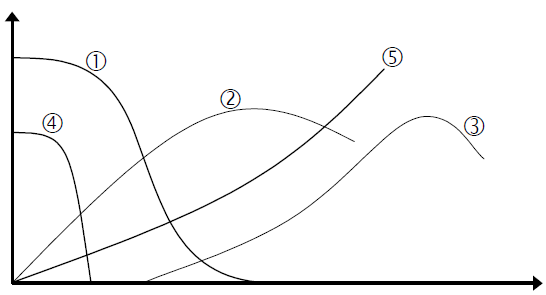
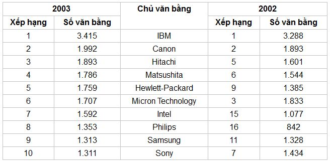

Chương 1 MỞ ĐẦU
1.1 Vai trò của khái niệm
Trong đời sống hàng ngày, chúng ta thường xuyên giao tiếp: trao đổi các ý nghĩ của mình với những người khác. Các ý nghĩ phản ánh các đặc tính của một hay nhiều đối tượng (hiểu theo nghĩa rộng: Bất kỳ cái gì cũng có thể coi là đối tượng) là các khái niệm. Rất tiếc và có thể rất may, bằng các giác quan, người ta chưa thể nhìn, nghe, sờ, ngửi hoặc nếm được các ý nghĩ một cách trực tiếp. Do vậy, ngôn ngữ (hiểu theo nghĩa rộng như nói, viết, ký hiệu, hình vẽ, cử chỉ) được loài người sáng chế ra để phản ánh các ý nghĩ (các khái niệm). Từ ngữ là các tên gọi cụ thể của các khái niệm, phản ánh các ý nghĩ mà chúng ta muốn truyền đạt đến những người khác và ngược lại.
Một trong những yêu cầu quan trọng để giao tiếp thành công là những người tham gia giao tiếp cần hiểu, theo dõi được cách trình bày và lập luận của nhau, tránh việc “ông nói gà, bà nói vịt”. Để làm điều đó, trước hết, họ cần có sự thống nhất về các định nghĩa, chỉ ra nội dung, bản chất của từng khái niệm được dùng trong quá trình giao tiếp hoặc người này cần phải dùng định nghĩa của người kia. Định nghĩa của khái niệm cho trước giúp những người tham gia giao tiếp “nhận dạng” đúng khái niệm cho trước và phân biệt nó với các khái niệm khác. Chúng ta thử hình dung, có hai người ngồi cạnh nhau trên xe buýt. Một người nói: “Xe gì mà chạy nhanh thế không biết”. Người kia đáp lại: “Nhanh gì, chậm như rùa thì có”. Khái niệm “nhanh” ở hai người này được định nghĩa không giống nhau và mang nặng tính chủ quan, cho nên chắc chắn hai người không hiểu nhau.
Thiếu sự nhất trí giữa những người sử dụng về định nghĩa của khái niệm cho trước không chỉ gây hiểu lầm, tranh cãi mà còn dẫn đến thực hiện sai các quyết định. Ở mức nghiêm trọng hơn có thể tạo ra sự tranh chấp, kiện tụng và các phiên tòa khó xử, nếu như định nghĩa khái niệm cho trước không thống nhất như đã nói ở trên, được sử dụng trong các bản thỏa thuận, hợp đồng hoặc trong các văn bản mang tính chất pháp lý.
Cùng với sự hình thành và phát triển của các khoa học, nhiều khái niệm mới xuất hiện. Lịch sử phát triển của các khái niệm cho thấy, trong rất nhiều trường hợp, các nhà khoa học lấy những từ ngữ có sẵn để đặt tên cho các khái niệm mới bằng cách tạo ra các định nghĩa mới tương ứng với chúng. Chẳng hạn, trong đời sống chúng ta có thể nghe những câu: “Anh ấy gây áp lực đối với tôi” hoặc “Áp lực công việc thật là nặng nề”. Trong khi đó, khái niệm “áp lực” trong vật lý học lại được định nghĩa khác cách hiểu thông thường. Khoa học mang tính khách quan nên các định nghĩa của các khái niệm khoa học phải phản ánh các đối tượng một cách khách quan, chính xác hơn so với định nghĩa ban đầu của các từ ngữ có sẵn. Chưa kể, nếu các định nghĩa của các khái niệm khoa học được xây dựng tốt, chúng không chỉ tạo nên ngôn ngữ giao tiếp thống nhất chung để hiểu nhau mà còn giúp mở ra những khả năng mới cho các nhà khoa học, như đại lượng tương ứng với khái niệm cho trước có thể định lượng, đo lường được hoặc dẫn đến những kiến thức mới. Đi tìm các khái niệm, xây dựng và hoàn thiện định nghĩa của chúng luôn là một trong những nhiệm vụ quan trọng của bất kỳ khoa học nào, mặc dù, đối với những khái niệm phức tạp, xây dựng định nghĩa của chúng để được tất cả các nhà nghiên cứu chấp nhận là vấn đề rất khó. Do vậy, để hiểu một nhà nghiên cứu cụ thể, bạn cần hiểu theo nội dung các định nghĩa của những khái niệm cùng cách lập luận mà người đó sử dụng. Sau đó, bạn có thể phát biểu các ý kiến tranh luận, nếu bạn thấy cần thiết.
Ngoài ra, với thời gian, sự tăng thêm kiến thức của loài người còn làm những khái niệm ban đầu có khuynh hướng, một mặt, cụ thể hóa, đa dạng hóa, mặt khác, trừu tượng hóa, khái quát hóa. Nói cách khác, nội dung của khái niệm không phải là bất biến theo thời gian, trong khi tên gọi của chúng nhiều khi không thay đổi (ý tại ngôn ngoại). Do vậy, khi đọc sách nói chung, người đọc cần lưu ý hiểu nội dung các khái niệm được trình bày, tránh chỉ căn cứ tên gọi của các khái niệm mà suy diễn theo ý chủ quan của mình.
Liên quan đến việc học nói chung, học Phương pháp luận sáng tạo và đổi mới (PPLSTVĐM – Creativity and Innovation Methodologies) nói riêng, người học thường muốn có được những kiến thức với phạm vi áp dụng rộng, đồng thời dễ sử dụng trong đời sống, công việc. Dưới đây là vài ý người viết muốn trao đổi với bạn đọc về vấn đề này. Bạn đọc thấy câu nào trong hai câu dưới đây mang tính cụ thể hơn? Câu nào mang tính khái quát hơn?
1. Trái táo có khối lượng 200 g rơi do sức hút bằng 2 N của Trái Đất.
2. Hai vật có khối lượng tương ứng \(m_1\) và \(m_2\) thì hút nhau bởi lực \(F=k\frac{m_1\cdot m_2}{r^2}\) với k là hệ số, r - khoảng cách giữa hai vật đó.
Bạn đọc nhận ra ngay, câu một cụ thể hơn và câu hai khái quát hơn. Có câu hỏi tiếp theo: “Câu nào có phạm vi áp dụng rộng hơn?” Chắc bạn đọc sẽ chọn câu hai là câu có tính khái quát cao hơn.
Thông thường, những kiến thức mang tính khái quát cao, phản ánh những điều mang tính quy luật nên có phạm vi áp dụng rộng hơn những kiến thức hoặc kinh nghiệm cụ thể. Tuy nhiên, trong nhiều trường hợp, người học khó sử dụng chúng vào thực tế vì thiếu khả năng cụ thể hóa những cái khái quát.
Ngược lại, những cái cụ thể tuy dễ hiểu, dễ dùng nhưng quá nhiều, quá đa dạng, người học khó mà nắm hết được tất cả chúng. Để khắc phục điều đó, người học cần có khả năng tách ra khía cạnh cần thiết và phát hiện sự giống nhau giữa những cái cụ thể khác nhau (thấy được cái chung giữa những cái riêng) để quy về những kiến thức khái quát đã học. Điều này làm tăng sự tự tin của bạn: bạn đang đi đúng theo quy luật, được phản ánh trong những kiến thức khái quát.
Nói cách khác, ngoài sự hướng dẫn của người dạy, người học cần có rất nhiều nỗ lực luyện tập các khả năng nói trên để thiết lập chiếc cầu nối hai chiều thông suốt từ những kiến thức khái quát đến những trường hợp cụ thể và ngược lại để vừa thấy cây và vừa thấy rừng. Có như thế, những kiến thức của bạn mới thực sự phát huy tác dụng tối đa: vừa dễ sử dụng trong các tình huống cụ thể, vừa có phạm vi áp dụng rộng phù hợp với quy luật mà không cần phải nhớ nhiều.
1.2 Một số khái niệm cơ bản và các ý nghĩa của chúng
Phương pháp luận sáng tạo và đổi mới (viết tắt là PPLSTVĐM) là bộ môn khoa học liên ngành, có các khái niệm của mình và các khái niệm lấy từ các bộ môn khoa học khác.
Trong mục 1.2 này, người viết sẽ trình bày một số khái niệm cơ bản của PPLSTVĐM để bước đầu có ngôn ngữ chung giữa người viết và người đọc. Những khái niệm khác sẽ dần dần được đưa vào ở những mục sau, khi cần dùng đến.
- Phương pháp (tiếng Anh là Method) là cách thức, quá trình thực hiện một công việc nào đó với hiệu quả cao.
Từ gốc Hy Lạp của “phương pháp” là “methodos”, có nghĩa đen là “con đường dẫn đến một cái gì đó” và được hiểu theo nghĩa thông dụng là “cách đạt đến mục đích”.
Vai trò quan trọng của phương pháp trong các hoạt động của con người đã được các dân tộc đánh giá cao từ rất lâu. Điều này thể hiện trong nội dung của nhiều câu tục ngữ. Ví dụ, ở nước ta có câu “Cho vàng không bằng chỉ đàng làm ăn”. Có người còn nói chệch là “Thà rằng cho vàng chứ nhất định không chỉ đàng làm ăn”. Ở Trung Quốc có câu tục ngữ “Cho một người một con cá và người đó ăn được một ngày – Dạy người đó cách bắt cá, sẽ có cá ăn hàng ngày”. Sau này, các danh nhân, các nhà khoa học lại càng coi trọng phương pháp. René Descartes, nhà toán học, triết học nổi tiếng, cách đây bốn thế kỷ, đã nhấn mạnh: “Thà rằng đừng nghĩ đến chuyện tìm kiếm chân lý gì cả còn hơn làm điều đó mà không có phương pháp”. Từ câu này, chúng ta có thể suy rộng ra: “Thà rằng đừng làm bất cứ công việc gì, còn hơn làm mà lại không có phương pháp”. Lev Tôlxtôi nhắc nhở: “Điều quý báu cần biết không phải quả đất tròn mà là làm cách nào để đi đến kết luận ấy”. Lev Lanđau, người được giải Nobel về vật lý khẳng định: “Phương pháp quan trọng hơn phát minh, bởi vì phương pháp nghiên cứu đúng sẽ dẫn đến những phát minh mới, giá trị hơn”.
Rất tiếc, tình hình nhiều người, nhiều nơi làm việc không có phương pháp hoặc được học phương pháp rồi không chú ý dùng, thậm chí cố ý làm sai phương pháp không phải là hiếm ở nước ta. Hai trong các ví dụ điển hình về điều đó là xây dựng hầm chui Văn Thánh 2 ở Tp. Hồ Chí Minh và tượng đài kỷ niệm 50 năm chiến thắng Điện Biên Phủ, bị báo chí, dư luận xã hội phê phán rất nhiều.
Trên thực tế, công việc có nhiều và đa dạng nên các phương pháp tương ứng với chúng cũng nhiều và đa dạng. Chưa kể, có thể có nhiều phương pháp dùng để thực hiện cùng một công việc nào đó. Tùy theo loại công việc, có những phương pháp đơn giản, dễ học, dễ dùng, ví dụ như phương pháp làm tính cộng, trừ, nhân, chia hoặc phương pháp nấu một món ăn gia đình. Có những phương pháp phức tạp, học lâu, đòi hỏi kiến thức nhiều lĩnh vực, trang thiết bị đắt tiền và nhiều người phối hợp mới thực hiện được. Ví dụ các phương pháp nghiên cứu, chế tạo trong các ngành khoa học và công nghệ cao. Có những phương pháp cụ thể đến từng chi tiết và có nhiều phương pháp trừu tượng, mang tính khái quát cao, ví dụ như các phương pháp triết học.
- Khái niệm “phương pháp luận” (Methodology) thường dùng theo hai nghĩa:
1. Khoa học (học thuyết) về phương pháp,
2. Hệ thống (tập hợp) các phương pháp dùng trong một khoa học hoặc một lĩnh vực nào đó.
Trong bộ sách PPLSTVĐM, người viết dùng thuật ngữ “phương pháp luận” theo nghĩa thứ hai. Như vậy, PPLSTVĐM là hệ thống các phương pháp dùng thực hiện các công việc sáng tạo và đổi mới.
- Sáng tạo (Creativity) là hoạt động tạo ra bất kỳ cái gì có đồng thời tính mới và tính ích lợi.
Trước hết, người viết muốn lưu ý bạn đọc: trong định nghĩa khái niệm sáng tạo, từ “hoạt động” được dùng với nghĩa rất rộng một cách có dụng ý, chứ không phải nghĩa hẹp “hoạt động của con người”. Điều này sẽ được giải thích ở mục 4.2. Cách tiếp cận TRIZ: Các ý tưởng cơ bản.
Cụm từ “bất kỳ cái gì” cho thấy kết quả (thành phẩm) sáng tạo cũng như chính hoạt động sáng tạo có thể có ở bất kỳ lĩnh vực nào của thế giới vật chất và thế giới tinh thần, miễn là “cái gì đó” có đồng thời tính mới và tính ích lợi. Nếu “cái gì đó” chỉ có hoặc tính mới, hoặc tính ích lợi thì không được coi là sáng tạo.
“Tính mới” là bất kỳ sự khác biệt nào của đối tượng cho trước so với đối tượng tiền thân của nó (đối tượng cùng loại ra đời trước đó về mặt thời gian). Trong trường hợp này, chúng ta nói rằng đối tượng cho trước có tính mới. Để có được sự sáng tạo, tính mới phải đem lại ích lợi (tạo ra giá trị thặng dư), không phải mới để mà mới.
“Tính ích lợi”” do tính mới tạo ra có thể rất đa dạng như tăng năng suất, hiệu quả; tiết kiệm năng lượng, nguyên vật liệu; giảm giá thành; có thêm chức năng mới; sử dụng thuận tiện hơn; thân thiện hơn với môi trường; tạo thêm được các xúc cảm, thẩm mỹ tốt… Ở đây, cần đặc biệt lưu ý: “Tính ích lợi” chỉ thể hiện ra khi đối tượng cho trước “làm việc” theo đúng chức năng và trong phạm vi áp dụng của nó.
Để xác định chức năng của một đối tượng nào đó, bạn đọc có thể đặt câu hỏi: “Đối tượng đó được tạo ra để làm gì?” Ví dụ, thuốc kháng sinh dùng để điều trị các bệnh nhiễm khuẩn; ô tô vận tải dùng để vận chuyển hàng hóa từ địa điểm này đến địa điểm khác; bàn chải và thuốc đánh răng dùng để làm vệ sinh răng miệng. Rõ ràng, các ích lợi của các đối tượng nói trên chỉ thực sự thể hiện ra khi chúng “làm việc” để thực hiện các chức năng của chúng. Thuốc kháng sinh còn nằm trên kệ ở hiệu thuốc, thậm chí còn ở trên tay bệnh nhân có nghĩa là chưa “làm việc” và tính ích lợi mới chỉ là tiềm năng. Chưa kể, chúng còn phải “làm việc” trong phạm vi áp dụng của chúng thì tính ích lợi mới trở thành hiện thực.
Khái niệm phạm vi áp dụng có xuất xứ từ luận điểm triết học: “Chân lý luôn luôn là cụ thể”. Luận điểm này phản ánh quy luật: một khẳng định (kết luận…) là đúng (chân lý) chỉ trong những điều kiện, hoàn cảnh cụ thể của các yếu tố liên quan (phạm vi áp dụng). Không có chân lý trừu tượng, hiểu theo nghĩa, bất chấp điều kiện, hoàn cảnh như thế nào, lúc nào cũng đúng, ở đâu cũng đúng. Do vậy, nếu mang một khẳng định (kết luận…) ra dùng ngoài phạm vi áp dụng của nó, nó không còn đúng nữa, nó có thể sai.
Ví dụ, trong điều kiện, hoàn cảnh cụ thể sau: Em An có mười quả táo, em ăn hết một quả. Hỏi còn lại mấy quả táo? Trong trường hợp này, kết luận “10 - 1 = 9” là đúng (chân lý). Trong điều kiện, hoàn cảnh cụ thể khác: Trên cây có mười con chim đang đậu, người thợ săn nổ súng bắn chết một con. Hỏi trên cây còn mấy con chim? Kết luận “10 - 1 = 9” không còn đúng nữa.
Tương tự như vậy, tính ích lợi của đối tượng cho trước có phạm vi áp dụng của mình mà nếu dùng đối tượng cho trước ra ngoài phạm vi áp dụng đó, lợi có thể biến thành hại. Ví dụ, thuốc kháng sinh dùng cho người lớn lại đem dùng cho trẻ em có thể gây ra những hậu quả đáng tiếc.
Về mặt nguyên tắc, tất cả các đối tượng (hiểu theo nghĩa rộng nhất) mà con người sử dụng, phải có các bản hướng dẫn đi kèm. Trong đó cần chỉ rõ các chức năng, phạm vi áp dụng của chúng (hoặc chỉ ra các trường hợp không được dùng vì có hại thay vì có lợi) và con người phải được giáo dục để làm theo các bản hướng dẫn, không dùng sai chức năng và ra ngoài phạm vi áp dụng. Trên thực tế, nhiều sự cố, tai nạn (thậm chí thảm khốc) đã, đang và sẽ xảy ra có liên quan đến việc vi phạm yêu cầu vừa nêu.
Trong nhiều trường hợp, xác định chính xác ngay từ đầu phạm vi áp dụng của các đối tượng không phải là dễ. Tuy vậy, người sử dụng cần luôn có ý thức về phạm vi áp dụng để dự phòng những hậu quả xấu có thể xảy ra, khi dùng đối tượng cho trước ra ngoài những điều kiện, hoàn cảnh quen thuộc, truyền thống.
Một trong những đòi hỏi của sự phát triển là các thành phẩm (hiểu theo nghĩa rộng) sử dụng trên thực tế, phải có tính ích lợi ngày càng cao và phạm vi áp dụng ngày càng rộng. Để đáp ứng đòi hỏi đó, người sáng tạo cần luôn tìm kiếm những ý tưởng, những giải pháp mới.
- Để đánh giá đối tượng cho trước có phải là sáng tạo hay không, chúng ta có thể dùng chương trình gồm năm bước sau:
1.2.1 CHƯƠNG TRÌNH ĐÁNH GIÁ ĐỐI TƯỢNG CHO TRƯỚC LÀ SÁNG TẠO HAY KHÔNG?
Bước 1: Chọn đối tượng tiền thân.
Bước 2: So sánh đối tượng cho trước với đối tượng tiền thân.
Bước 3: Tìm “tính mới” của đối tượng cho trước.
Bước 4: Trả lời câu hỏi: “Tính mới đó đem lại ích lợi gì? Trong phạm vi áp dụng nào?”
Bước 5: Kết luận theo định nghĩa sáng tạo.
Ví dụ 1: Đối tượng cho trước là cây bút chì thân gỗ có tiết diện ngang hình lục giác đều.
Bước 1: Chọn đối tượng tiền thân là cây bút chì thân gỗ có tiết diện ngang hình tròn.
Bước 2: Dùng các giác quan và suy nghĩ để so sánh cây bút chì cho trước với cây bút chì tiền thân.
Bước 3: Tìm “tính mới”. Cây bút chì cho trước khác cây bút chì tiền thân ở tiết diện ngang là hình lục giác thay vì hình tròn.
Bước 4: Tiết diện ngang hình lục giác có ích lợi: Giữ cây bút chì không lăn, do vậy, không bị rơi xuống đất làm gãy đầu chì.
Bước 5: Kết luận: Cây bút chì cho trước có đồng thời tính mới và tính ích lợi, vậy cây bút chì cho trước là sáng tạo.
Ví dụ 2: Đối tượng cho trước là điện thoại cầm tay.
Bước 1: Chọn đối tượng tiền thân là điện thoại cố định (để bàn chẳng hạn).
Bước 2: Dùng các giác quan và suy nghĩ để so sánh điện thoại cho trước với điện thoại tiền thân.
Bước 3: Tìm “tính mới”. Cái khác cơ bản nhất của điện thoại cầm tay so với điện thoại cố định là tiếng nói biến thành sóng điện từ truyền trong không gian, không cần phải có dây nối giữa hai nơi gọi đi và gọi đến.
Bước 4: Tính mới này đem lại ích lợi: Sử dụng thuận tiện hơn, tiết kiệm nguyên vật liệu chế tạo, tiết kiệm thời gian cho người dùng… Tuy nhiên, điện thoại cầm tay không dùng ở những nơi có thể gây nhiễu cho thông tin liên lạc hoặc ảnh hưởng xấu đến các chế độ làm việc của các thiết bị nhạy cảm với sóng điện từ…
Bước 5: Kết luận. Điện thoại cầm tay là sáng tạo.
Theo định nghĩa khái niệm sáng tạo và chương trình đánh giá đối tượng cho trước có phải là sáng tạo hay không trình bày ở trên, bất kỳ người nào cũng đều đã từng nhiều lần sáng tạo. Ví dụ, khi đi học, việc tự mình nghĩ ra lời giải (chứ không phải cóp của người khác) các bài tập thầy, cô cho là sáng tạo, vì ở đây có đồng thời tính mới: lời giải tự mình tìm được là mới so với khi mình chưa tìm được; tính ích lợi: hiểu, vận dụng kiến thức đã học tốt hơn và được điểm cao. Tuy nhiên, tính mới và tính ích lợi còn hẹp, hiểu theo nghĩa: mới và ích lợi với chính người giải chứ không còn mới và ích lợi đối với biết bao thế hệ học sinh đi trước đã giải bài tập đó. Trường học phải giúp tập dượt, rèn luyện sáng tạo để nhắm tới mục tiêu cao hơn: đào tạo những người có khả năng sáng tạo ra những công trình với tính mới và tính ích lợi ở mức nhân loại, được công bố dưới dạng các bài báo nghiên cứu khoa học trong các tạp chí khoa học quốc tế hoặc được cấp patent bảo hộ theo luật về sở hữu trí tuệ và được thương mại hóa, kiểu như ví dụ 1 và 2.
Người đọc có thể tìm thêm nhiều, rất nhiều ví dụ nữa về sáng tạo để thấy rằng sáng tạo rất gần, ở ngay xung quanh chúng ta và mỗi người chúng ta đã từng nhiều lần sáng tạo. Mặt khác, khái niệm sáng tạo cũng chứa trong nó nhiều khái niệm khác như cải tiến, sáng kiến, đề nghị hợp lý hóa, hoàn thiện, sáng chế, phát minh…
Hiện nay chúng ta đang dừng ở định nghĩa chung của khái niệm sáng tạo. Sau này, ở mục nhỏ 4.2.6Các mức sáng tạo – các mức khó của bài toán, chúng ta sẽ đi sâu hơn để thấy rằng sáng tạo còn phân thành các mức cao, thấp khác nhau và để đạt được chúng, các điều kiện chủ quan, khách quan cũng đòi hỏi khác nhau.
Có câu hỏi đặt ra: “Tại sao con người cần sáng tạo và sáng tạo để làm gì?” Câu trả lời là: “Con người cần sáng tạo vì con người có các vấn đề cần giải quyết và nếu giải quyết thành công thì các nhu cầu của mình mới thỏa mãn”. Quay trở lại các ví dụ nêu trên, người đọc có thể thấy các thành phẩm sáng tạo chính là các giải pháp cho các vấn đề tương ứng. Ví dụ 1 cho thấy vấn đề sau: Bút chì để trên bàn, lăn rơi xuống đất làm gãy đầu chì đã gọt. Làm sao nó đừng lăn? Giải quyết được chuyện đó người sử dụng đỡ tốn thời gian và công sức gọt lại. Tương tự như vậy, một người hay di chuyển cần liên lạc với những người khác cũng hay di chuyển. Điện thoại cố định không đáp ứng yêu cầu này, phải làm sao đây? Một lần nữa, ở đây có vấn đề. Điện thoại di động trong ví dụ 2 là giải pháp cho vấn đề. Vậy vấn đề là gì?
- Vấn đề hay còn gọi là bài toán (Problem) là tình huống, ở đó người giải biết mục đích cần đạt nhưng:
1. không biết cách đạt đến mục đích, hoặc
2. không biết cách tối ưu đạt đến mục đích trong một số cách đã biết.
Một người, dù rơi vào trường hợp một hay rơi vào trường hợp hai đều có vấn đề. Trường hợp hai chính là quá trình ra quyết định: thực hiện việc xem xét, đánh giá, cân nhắc, lựa chọn trong số các cách (phương án) đã biết ra cách (phương án) tối ưu để đem dùng trong thực tế.
Có những tình huống, ở đó trường hợp một chuyển hóa thành trường hợp hai và ngược lại. Ví dụ, một người thường 12 giờ đêm lên giường đi ngủ. Một đêm, sau khi lên giường, người đó trằn trọc hoài không ngủ được. Người đó có vấn đề vì người đó biết mục đích là “ngủ” nhưng có thể rơi vào một trong hai trường hợp sau:
1. không biết cách để ngủ được,
2. biết bốn cách có thể ngủ được: a) uống thuốc ngủ; b) đếm thầm trong đầu 1, 2, 3, 4… cho đến khi ngủ thiếp đi; c) làm một số động tác thư giãn, sau đó đặt lưng xuống giường dễ ngủ hơn; d) lôi truyện ra đọc cho đến khi mỏi mắt, rớt truyện và sa vào giấc ngủ, nhưng người đó không biết cách nào là tối ưu cho mình.
Nếu rơi vào trường hợp hai, người đó phải suy nghĩ ra quyết định kiểu như sau: 12 giờ đêm rồi mà thuốc ngủ không có sẵn, phải đi mua, cách này không thích hợp. Tập các động tác thư giãn hoặc bật đèn đọc truyện ảnh hưởng đến những người cùng phòng. Vậy tối ưu là đếm thầm trong đầu 1, 2, 3, 4… Nếu người đó ngủ được, vấn đề được giải quyết. Còn nếu đếm đã tới tỷ mấy mà vẫn không ngủ được, người đó coi vấn đề vẫn chưa được giải quyết bằng cách tối ưu. Lúc này, người đó chuyển sang trường hợp thứ nhất: xem như mình không biết cách nào để ngủ được cả, hãy suy nghĩ tìm cách mới. Như vậy, trường hợp thứ hai có thể chuyển hóa thành trường hợp một. Ngược lại, giả sử khởi đầu người đó ở trường hợp một: không biết cách để ngủ được. Người đó phải suy nghĩ để giải quyết vấn đề của mình. Nếu người đó tìm ra không phải một cách mà từ hai cách trở lên trong khi thực tế chỉ dùng có một cách (chứ không phải cùng một lúc nhiều cách), người đó phải suy nghĩ tiếp để ra quyết định dùng cách tối ưu trong số các cách tìm ra. Nói cách khác, trường hợp một lại chuyển hóa thành trường hợp hai.
Với định nghĩa vấn đề (bài toán) trình bày ở trên, chúng ta thấy vấn đề có thể là câu hỏi chưa có câu trả lời, các bài tập các loại phải giải khi đi học, các kỳ kiểm tra, thi, lựa chọn nghề nghiệp chuyên môn để được đào tạo, xin việc làm, nhà ở, thu nhập, mua sắm, hôn nhân, gia đình, nuôi dạy con cái, sức khỏe… Do vậy, không phải không có lý khi nói rằng: “Cuộc đời của mỗi người là chuỗi các vấn đề cần phải giải quyết, chuỗi các quyết định cần phải ra”. Cuộc đời khổ hay sướng, hạnh phúc hay không hạnh phúc tùy thuộc, ở mức độ rất lớn, vào việc con người cho trước giải quyết các vấn đề và ra quyết định như thế nào trên mỗi bước đường đi của cuộc đời mình.
Các vấn đề rất đa dạng. Người ta có thể phân loại chúng theo những tiêu chuẩn khách quan hoặc chủ quan nhất định. Dưới đây, người viết thử liệt kê một số và lưu ý bạn đọc: Việc phân loại các vấn đề không nên hiểu một cách chính xác tuyệt đối, vì có nhiều trường hợp, vấn đề cho trước vừa thuộc loại này và vừa thuộc loại khác.
Phân loại theo địa lý: địa phương, quốc gia, khu vực, toàn cầu, vũ trụ.
Phân loại theo lĩnh vực: đời sống, nghề nghiệp, chuyên môn các loại.
Phân loại theo chủ sở hữu bài toán: bài toán của người này, bài toán của người khác. Trong đó, có những bài toán phải chính chủ sở hữu giải, không ai có thể giải thay được.
Phân loại theo số lượng người tham gia giải bài toán: cá nhân, tập thể…
Phân loại theo mức khó của bài toán: có bài toán hầu như người nào cũng giải được và có bài toán chỉ những người xuất chúng mới giải được.
Phân loại theo thang bậc trách nhiệm: người thường, quản lý, lãnh đạo các cấp.
Phân loại theo thời gian: quá khứ, hiện tại và tương lai.
Phân loại theo mức độ quan trọng, ưu tiên.
Phân loại theo mức độ cấp bách.
Phân loại theo số lượng tiền chi phí để giải bài toán.
Các vấn đề để nhận thức thế giới: các phát minh khoa học.
Các vấn đề để biến đổi thế giới: các sáng chế (hiểu theo nghĩa rộng).
Các vấn đề nhằm mục đích tồn tại.
Các vấn đề nhằm mục đích phát triển.
Các vấn đề tất yếu nảy sinh trên con đường phát triển.
Các vấn đề không đáng nảy sinh do những người khác ra quyết định sai gây ra.
Các vấn đề không đáng nảy sinh do chính mình ra quyết định sai gây ra.
Các vấn đề gặp phải một cách bị động: bão, lụt, động đất…
Các vấn đề tự đặt ra một cách chủ động: nâng cao mức sống, cải tiến trang thiết bị làm việc, hiện đại hóa, công nghiệp hóa, xây dựng kinh tế và xã hội tri thức…
Đối với quyết định (lời giải cuối cùng của bài toán được đưa ra dùng trong thực tế) cũng có thể phân loại theo nhiều cách khác nhau, ví dụ:
Phân loại theo cách ra quyết định: cá nhân toàn quyền quyết định, cá nhân phải tham khảo ý kiến của một số người nhất định, phải thảo luận tập thể, phải biểu quyết tập thể…
Phân loại theo mức độ tối ưu so với mục đích cần đạt, được đề ra trong lời phát biểu bài toán.
Phân loại theo tính khả thi.
Phân loại theo giá trị: quyết định mang tính khuyến cáo, tư vấn, bắt buộc thi hành…
Phân loại theo phạm vi ảnh hưởng: rộng, hẹp.
Phân loại theo thời gian hiệu lực: dài, ngắn.
Các nghiên cứu cho thấy, chỉ khi có vấn đề, bộ óc của chúng ta mới thực sự suy nghĩ. Còn ở đâu chúng ta biết mục đích và biết luôn cách đạt đến mục đích thì chúng ta cứ thế mà làm, thậm chí theo thói quen mà hầu như không suy nghĩ.
Quá trình suy nghĩ giải quyết vấn đề và ra quyết định còn gọi là tư duy sáng tạo với định nghĩa sau:
- Tư duy (suy nghĩ) sáng tạo (Creative Thinking) là quá trình suy nghĩ đưa người giải:
1. từ không biết cách đạt đến mục đích đến biết cách đạt đến mục đích, hoặc
2. từ không biết cách tối ưu đạt đến mục đích đến biết cách tối ưu đạt đến mục đích trong một số cách đã biết.
Ta có thể coi hai cách nói “Quá trình suy nghĩ giải quyết vấn đề và ra quyết định” và “Tư duy sáng tạo” là tương đương. Bởi vì, dù người giải quyết vấn đề ở trường hợp một hay trường hợp hai, đều phải tự mình suy nghĩ để đi từ “không biết cách” đến “biết cách”, nghĩa là quá trình suy nghĩ này tạo ra tính mới. Tính mới đó đem lại ích lợi là đạt được mục đích của người giải đề ra. Theo định nghĩa khái niệm sáng tạo, ở đây “có đồng thời tính mới và tính ích lợi”, vậy suy nghĩ giải quyết vấn đề và ra quyết định (Thinking for Problem Solving and Decision Making) là tư duy sáng tạo.
Khái niệm tư duy sáng tạo chỉ phản ánh một phần công việc của toàn bộ quá trình thực hiện giải quyết vấn đề, đấy là suy nghĩ giải quyết vấn đề. Để trả lời câu hỏi “Khi nào một bài toán cho trước được coi là giải xong?”, chúng ta cần làm quen thêm một khái niệm nữa: khái niệm “đổi mới” (Innovation).
- Đổi mới (Innovation) là quá trình thực hiện tạo ra cái mới sao cho các hệ thống liên quan tiếp nhận cái mới đó một cách đầy đủ, ổn định và bền vững để các hệ liên quan hoạt động tốt hơn trước.
Khái niệm “đổi mới” giống khái niệm sáng tạo ở chỗ, nó có đồng thời tính mới (tạo ra cái mới) và tính ích lợi (hệ liên quan hoạt động tốt hơn trước). Tuy vậy, nó được tách ra thành khái niệm riêng để nhấn mạnh hai điểm:
1. “Quá trình thực hiện” bao gồm cả tư duy, hành động chân, tay của nhiều người và sử dụng các nguồn lực như vốn, nguyên vật liệu, trang thiết bị, năng lượng, kiến thức…
2. “Tiếp nhận cái mới đó một cách đầy đủ, ổn định và bền vững”. Đầy đủ, về mặt nguyên tắc, được hiểu là một trăm phần trăm. Tuy nhiên, trong thực tế có những trường hợp gần một trăm phần trăm cũng có thể coi là đầy đủ. Ổn định được hiểu: sự tiếp nhận cái mới là nhất quán, không có chuyện trồi, sụt theo thời gian. Sự tiếp nhận cái mới một cách bền vững có nghĩa, cái mới sau khi được hệ liên quan tiếp nhận, không chỉ phát huy các ích lợi mà còn không làm nảy sinh các vấn đề mới cho hệ liên quan. Nếu người sử dụng bàn chải, thuốc đánh răng, đánh răng không đúng kỹ thuật và đủ số lần cần đánh trong ngày, sự tiếp nhận này không coi là đầy đủ. Nếu một tháng, trung bình người đó đánh răng có 20 ngày còn những ngày còn lại không đánh, sự tiếp nhận này là không ổn định. Ở nước ta thỉnh thoảng lại có những “phong trào” hoặc “chiến dịch” với mong muốn đạt được những cái tốt hơn. Sau đó, nếu mọi việc lại đâu vào đấy như cũ, một lần nữa chúng ta không có sự tiếp nhận đầy đủ và ổn định. Việc sử dụng silicon trong giải phẫu thẩm mỹ để tạo những đường nét đẹp của cơ thể người lại làm nảy sinh các vấn đề sức khỏe: sự tiếp nhận silicon của cơ thể người là không bền vững. Tương tự, phân bón hóa học và thuốc trừ sâu hóa học cũng làm nảy sinh nhiều vấn đề cho nông nghiệp, do vậy, sự phát triển của nông nghiệp theo hướng này không được coi là bền vững. Nói cách khác, có thể có sáng tạo mà không có đổi mới nếu sáng tạo đó không được tiếp nhận một cách đầy đủ, ổn định và bền vững để tính ích lợi của nó trở thành hiện thực. Cũng theo tinh thần đổi mới, một người trước khi ra quyết định cuối cùng để thực hiện trên thực tế cần tìm hiểu xem liệu quyết định của mình có được tiếp nhận đầy đủ, ổn định và bền vững không.
- Toàn bộ quá trình thực hiện giải quyết vấn đề nhìn theo thời gian, có thể chia thành sáu giai đoạn sau đây và kết quả của mỗi giai đoạn phải được giai đoạn sau tiếp nhận một cách đầy đủ, ổn định và bền vững cho đến giai đoạn cuối cùng thì bài toán cụ thể cho trước mới được coi là giải xong.
A. Xác định tình huống vấn đề xuất phát ưu tiên cần giải.
B. Xác định cách tiếp cận đối với tình huống vấn đề xuất phát ưu tiên (hay còn gọi là xác định bài toán cụ thể đúng cần giải).
C. Tìm thông tin giải bài toán.
D. Tìm ý tưởng giải bài toán.
E. Phát triển ý tưởng thành thành phẩm.
F. Áp dụng thành phẩm vào hệ thực tế.
Bây giờ chúng ta đi vào tìm hiểu chi tiết hơn về sáu giai đoạn của quá trình thực hiện giải bài toán.
1.2.1.1 Giai đoạn A: Xác định tình huống vấn đề xuất phát ưu tiên cần giải
Các bài toán gặp trong thực tế được đặt tên là “các tình huống vấn đề xuất phát” để phân biệt với “các bài toán cụ thể được phát biểu đúng” (sẽ giải thích sau), thường giải ở trong trường học. Cùng trong một khoảng thời gian, một cá nhân hoặc một tổ chức (hiểu theo nghĩa rộng nhất) có thể có từ hai tình huống vấn đề xuất phát trở lên. Do các nguồn lực như thời gian, sức người, tiền bạc, phương tiện vật chất… có hạn, đồng thời, do ý nghĩa, tầm quan trọng của các tình huống vấn đề xuất phát này khác nhau, người giải phải xác định xem tình huống vấn đề xuất phát nào được ưu tiên tập trung giải trước. Nói cách khác, người giải trước hết cần phát hiện, liệt kê hết các tình huống vấn đề xuất phát của mình, từ đó chọn “tình huống vấn đề xuất phát ưu tiên”.
Ví dụ, một gia đình, có đứa con đầu đang học lớp 6 muốn cháu trong tương lai phải vào được đại học. Trong khi đó, đứa út mới một tuổi, đang bị suy dinh dưỡng. Gia đình này có hai tình huống vấn đề xuất phát cần giải quyết. Rõ ràng, gia đình nói trên cần ưu tiên giải quyết vấn đề suy dinh dưỡng của đứa bé trước.
Tuy nhiên, trong nhiều trường hợp, xác định ưu tiên một cách chính xác không phải là dễ. Người viết sẽ đề cập đến các tiêu chuẩn dùng để đánh giá mức độ ưu tiên trong những phần liên quan ở các quyển sách sau. Ít ra, lúc này, bạn đọc cần nâng cao ý thức về sự cần thiết phải ưu tiên, phải tập trung, tránh dàn trải, tránh cùng một lúc giải quyết nhiều vấn đề hoặc cùng một lúc làm nhiều việc.
1.2.1.2 Giai đoạn B: Xác định cách tiếp cận giải quyết tình huống vấn đề xuất phát ưu tiên (hay còn gọi là xác định bài toán cụ thể đúng cần giải)
Nói chung, có nhiều đường đi để đến một địa điểm nào đó. Tương tự như vậy, để giải quyết tình huống vấn đề xuất phát ưu tiên có thể có nhiều cách tiếp cận, là các hướng tìm lời giải, từ đó hình thành phổ các bài toán cụ thể có thể có.
Ví dụ, tình huống vấn đề xuất phát ưu tiên “Làm sao đứa bé hết suy dinh dưỡng?” được phát biểu quá chung. Tùy theo cách tiếp cận, các bài toán cụ thể sau có thể nảy sinh: Hãy tìm và nấu các món ăn vừa miệng với đứa bé, nó ăn nhiều sẽ hết suy dinh dưỡng; Hãy tìm cách cho ăn thích hợp để đứa bé thoải mái về tâm lý, nó ăn nhiều sẽ hết suy dinh dưỡng; Tìm đúng loại thuốc kích thích sự ngon miệng cho đứa bé uống; Tìm xem đứa bé bị bệnh gì làm nó suy dinh dưỡng để chữa dứt điểm… tạo thành phổ các bài toán cụ thể có thể có. Nói cách khác, người giải về mặt nguyên tắc, phải phát hiện hết tất cả các bài toán cụ thể rút ra từ tình huống vấn đề xuất phát ưu tiên.
Tiếp theo, người giải phải phát biểu, phân tích, đánh giá các bài toán cụ thể đó để lựa chọn ra đúng bài toán cụ thể cần giải. Ví dụ, với đứa bé cụ thể này: Tìm cách cho ăn thích hợp mới là bài toán đúng cần giải. Với đứa bé cụ thể khác, bài toán đúng cần giải lại là bài toán chữa bệnh. J. Dewey nhấn mạnh: “Bài toán được phát biểu đúng là bài toán đã giải được một nửa”.
Thực tế cho thấy, có một nhược điểm rất lớn thường xảy ra ở giai đoạn này: người giải vừa phát hiện ra một bài toán cụ thể đã lao vào giải ngay, không biết rằng có nguyên cả phổ các bài toán cụ thể có thể có của tình huống vấn đề xuất phát ưu tiên cho trước và bài toán cụ thể đúng cần giải lại là bài toán cụ thể khác.
Những sai lầm, nếu xảy ra ở giai đoạn A và B có thể coi là những sai lầm mang tính chiến lược vì xác định sai tình huống vấn đề xuất phát ưu tiên hoặc xác định không đúng bài toán cụ thể cần giải sẽ làm những nỗ lực ở những giai đoạn sau trở nên vô ích. Đây là những nguyên nhân quan trọng dẫn đến lãng phí lớn trong đầu tư ở tất cả các lĩnh vực.
1.2.1.3 Giai đoạn C: Tìm thông tin giải bài toán
Khi được ca ngợi là người khổng lồ trong khoa học, Newton đáp lại, đại ý: “Tôi không phải là người khổng lồ. Tôi nhìn xa hơn người khác vì tôi trèo lên vai người khổng lồ”. Theo Newton, người khổng lồ đích thực là các kiến thức nhân loại đã tìm ra, ông làm công việc kế thừa và phát triển tiếp. Như vậy, trước khi thực sự suy nghĩ giải bài toán cụ thể đúng cần giải, thu được từ giai đoạn B, người giải bài toán phải tìm thông tin trên phạm vi toàn cầu để kế thừa những gì nhân loại đã đạt được để tránh “sáng chế lại cái bánh xe” hoặc “phát hiện lại Châu Mỹ”. Một mặt, công việc tìm thông tin hiện nay thuận lợi hơn trước nhờ sự giao lưu dễ dàng giữa các nước và Internet. Mặt khác, chúng ta sống trong thời đại bùng nổ thông tin nên tìm đúng thông tin mình cần, có khi khó như tìm con cá vàng bơi trong đại dương.
Có thể có những khả năng sau xảy ra khi tìm thông tin giải bài toán cụ thể cho trước:
1. Tìm được lời giải có sẵn và lời giải cũng đã hết thời hạn bảo hộ độc quyền (hoặc không thuộc lĩnh vực bảo hộ độc quyền), người giải có thể chuyển ngay sang giai đoạn áp dụng.
2. Tìm được lời giải có sẵn vẫn còn hiệu lực độc quyền. Người giải có thể thương lượng với tác giả để mua quyền sử dụng lời giải.
3. Tìm được lời giải của các bài toán tương tự bài toán cụ thể cho trước. Người giải có thể tìm cách biến đổi từ đó để có được lời giải mình cần.
4. Tìm được các thông tin liên quan đủ để chuyển sang giai đoạn sau: Tìm ý tưởng giải bài toán.
5. Các thông tin có được chưa đủ để giải bài toán. Lúc này, người giải cần tự mình tạo ra thông tin bằng cách tiến hành các thí nghiệm, điều tra, nghiên cứu, khảo sát… Ví dụ, cần xây cầu hay nhà cao tầng tại vùng đất chưa được nghiên cứu trước đó, người giải bài toán phải tiến hành khoan thăm dò, phân tích mẫu… để có những thông tin cần thiết.
1.2.1.4 Giai đoạn D: Tìm ý tưởng giải bài toán
Trong giai đoạn này, người giải phải suy nghĩ để phát các ý tưởng giải bài toán, phân tích, đánh giá chúng và lựa chọn để quyết định: cuối cùng, ý tưởng nào sẽ được dùng làm giải pháp của bài toán cho trước.
1.2.1.5 Giai đoạn E: Phát triển ý tưởng thành thành phẩm
Nói một cách nôm na, đây là giai đoạn vật chất hóa ý tưởng dưới dạng các bản vẽ, tính toán, chế tạo thử, chạy thử… Kết quả của giai đoạn này là người giải có thành phẩm dưới dạng có thể sử dụng chính thức trên thực tế hoặc đưa ra kinh doanh trên thị trường (thương mại hóa) được.
Đối với các doanh nghiệp, thành phẩm chính là hàng hóa hoặc dịch vụ.
1.2.1.6 Giai đoạn G: Áp dụng vào hệ thực tế
Từ “áp dụng” cần hiểu theo nghĩa rộng. Ví dụ, sau khi tìm ra vắcxin phòng một loại bệnh nào đó, người ta mời những người liên quan đến tiêm chủng. “Áp dụng” cũng có thể là đưa thành phẩm ra bán trên thị trường. Cụm từ “hệ thực tế’ cần hiểu theo nghĩa tương đối, so sánh. Đấy là tất cả mọi người, mọi nơi tiềm ẩn cần sử dụng thành phẩm cụ thể cho trước, thu được ở giai đoạn E, chứ không phải hệ thực tế chung chung.
- Sau khi giải thích và phân tích từng giai đoạn của toàn bộ quá trình thực hiện giải bài toán, người viết cần lưu ý bạn đọc mấy ý dưới đây:
1. Từng giai đoạn lại có thể chia thành các giai đoạn nhỏ hơn. Nói chung, mỗi giai đoạn đều tạo ra cái mới nào đó. Để đi hết từ giai đoạn đầu đến giai đoạn cuối một cách hoàn hảo, kết quả của mỗi giai đoạn (cái mới tạo ra của giai đoạn đó) phải được hệ liên quan của giai đoạn sau tiếp nhận đầy đủ, ổn định và bền vững (đổi mới từng giai đoạn).
2. Hiếm khi một người giải đi hết cả sáu giai đoạn của quá trình thực hiện giải bài toán. Với những bài toán khó, đây là cuộc chạy tiếp sức của nhiều người, thậm chí nhiều thế hệ, ví dụ giải bài toán chế tạo ô tô, xe lửa, máy bay, ti vi, máy tính…
3. Việc phân chia theo các giai đoạn không có nghĩa giai đoạn nào dứt giai đoạn đó mà thường có sự quay trở lại vì các lý do khác nhau.
4. Sáu giai đoạn nói trên dành cho một bài toán nào đó nhưng trong từng giai đoạn có thể (thường là) nảy sinh các bài toán con. Đối với “bài toán có trong bài toán cho trước” lại có thể áp dụng sáu giai đoạn.
5. Kết thúc giai đoạn thứ sáu, khi hệ thực tế (được hiểu là tất cả mọi người, mọi nơi tiềm ẩn cần sử dụng thành phẩm cụ thể do giải bài toán cho trước mà có) tiếp nhận thành phẩm đó một cách đầy đủ, ổn định và bền vững, bài toán cho trước mới được coi là giải xong. Lúc đó, chúng ta có đổi mới hoàn toàn (Full Innovation) đối với bài toán cụ thể cho trước.
Thành phẩm của quá trình giải bài toán “Làm sao giữ vệ sinh răng miệng?” là bàn chải và thuốc đánh răng. Những người tiềm ẩn cần sử dụng chúng (hệ thực tế) là tất cả những người sống có răng. Bài toán này chỉ giải xong (đổi mới hoàn toàn) khi tất cả những người sống có răng tiếp nhận bàn chải và thuốc đánh răng một cách đầy đủ (tất cả các yêu cầu kỹ thuật), ổn định (đánh răng đều đều theo yêu cầu, chứ không phải lúc có, lúc không) và bền vững (có được các ích lợi về vệ sinh răng miệng, không làm nảy sinh các vấn đề mới). Ta thử hình dung bài toán “Làm sao giữ vệ sinh răng miệng?” giải xong rồi thì sao? Lúc đó, mọi người chẳng ai nhắc nhở ai, chẳng ai tự nhắc mình về chuyện đánh răng nữa vì nó trở thành thói quen bình thường của mỗi người. Nhân đây, chúng ta thử quay trở lại khái niệm “sáng tạo”: có đồng thời tính mới và tính ích lợi. Bài toán giải xong làm cho “tính mới” trở thành “không mới”, “bình thường hóa” (cũ rồi, xưa rồi) còn “tính ích lợi” trở thành hiện thực rộng rãi vì tính ích lợi chỉ thể hiện ra khi bàn chải và thuốc đánh răng “làm việc đúng chức năng và trong phạm vi áp dụng” của chúng. Nói cách khác, bài toán giải xong đánh dấu đạt được một mốc mới (để từ đó chuyển sang đạt các mốc tiếp theo) của sự phát triển. Có vậy, chất lượng công việc, cuộc sống của mỗi người và toàn xã hội mới được nâng cao. Người viết cho rằng, nếu phát động phong trào, chiến dịch thì cần đạt và giữ được cái mốc cụ thể nào đó mới thật sự có ý nghĩa. Bạn đọc, theo bạn ở nước ta bài toán “Dùng bàn chải và thuốc đánh răng” đã giải xong chưa? Còn bao giờ bài toán “Chấp hành luật lệ giao thông” sẽ giải xong?
6. Hai điểm 2) và 5) cho thấy cơ hội sau: Vì thực hiện xong giai đoạn áp dụng thành phẩm vào thực tế (đổi mới hoàn toàn – bài toán giải xong) mới có sự phát triển hiện thực rộng rãi nên người giải bài toán có thể kế thừa ngay kết quả của các giai đoạn trước đó, không nhất thiết bắt đầu từ giai đoạn đầu tiên. Vậy, ai làm được đổi mới hoàn toàn sớm, người đó về đích sớm, thậm chí sớm hơn cả quê hương tác giả của thành phẩm, có khi còn sớm hơn cả tổ chức chế tạo, sản xuất ra chính thành phẩm, nơi tưởng rằng sẽ tiếp nhận thành phẩm đầy đủ, ổn định và bền vững trước các nơi khác.
Câu chuyện dưới đây về việc người Nhật áp dụng quản lý chất lượng toàn diện (Total Quality Management) minh họa cho ý nói trên:
Cho đến tận một số năm sau Chiến tranh thế giới lần thứ hai, chất lượng hàng hóa Nhật Bản, nói chung, thấp hơn nhiều so với Mỹ và Tây Âu, đến nỗi trở thành định kiến trong đầu người phương Tây. Bob Hope, nghệ sĩ hài nổi tiếng của Mỹ lợi dụng tâm lý đó và thực hiện tiết mục sau. Ông chạy ra sân khấu, làm các động tác diễn tả thái độ buồn bực, tuyệt vọng với mức độ ngày càng tăng. Người xem hiểu rằng, cứ đà này, chịu hết nổi, anh chàng sẽ tự tử. Quả nhiên, ở phút cao trào, nghệ sĩ hài rút từ túi ra khẩu súng lục, kê vào thái dương và bóp cò. Bóp cò mà súng không nổ. Tức quá, anh ta đưa khẩu súng lại gần mắt để xem xét rồi đọc to dòng chữ trên khẩu súng: Sản xuất tại Nhật Bản (Made in Japan). Chỉ thế thôi mà khán giả ngồi dưới ôm bụng bò lăn, bò càng ra cười một cách khoái trá. Thành công đạt được là do tiết mục của Bob Hope cộng hưởng với các ý nghĩ có sẵn từ lâu của người xem về chất lượng thấp của hàng hóa Nhật Bản.
Trong khoảng từ năm 1938 đến năm 1945, ở Mỹ, hai nhà khoa học là Walter A. Shewhart và W. Edwards Deming nghiên cứu, công bố và thử nghiệm những cái mà sau này gọi là quản lý chất lượng toàn diện (Total Quality Management – TQM). Trong khi các doanh nghiệp Mỹ chưa mấy hào hứng với quản lý chất lượng toàn diện thì các doanh nghiệp Nhật tiếp nhận nó một cách đầy đủ, ổn định và bền vững. Giáo sư Deming vào những năm 1947, 1950, 1951, 1952, 1955 và 1956 được mời sang Nhật dạy quản lý chất lượng toàn diện cùng nhiều chuyên gia Mỹ khác nữa, trong đó phải kể đến tiến sỹ J.M. Juran. Kết quả, chỉ khoảng mười năm sau đó, chất lượng hàng hóa Nhật Bản vươn lên hạng thế giới, thậm chí, một số mặt hàng của Nhật định ra tiêu chuẩn chất lượng cho cả thế giới. Lúc này, nhiều doanh nghiệp Mỹ bị Nhật cạnh tranh gay gắt mới biết lý do và tìm cách áp dụng quản lý chất lượng toàn diện, kể cả việc mời các chuyên gia Nhật sang chia sẻ kinh nghiệm.
Câu chuyện trên cho thấy, người Nhật không phải là tác giả của quản lý chất lượng toàn diện nhưng người Nhật thực hiện đổi mới hoàn toàn trước người Mỹ, do vậy những ích lợi của quản lý chất lượng toàn diện đến trước so với chính quê hương của tác giả là nước Mỹ. Để rồi, tờ báo “Nước Mỹ ngày nay” (USA Today) phải ngậm ngùi kết luận: “Các triết lý quản trị của Deming là động lực đứng đằng sau phép lạ thần kỳ của kinh tế Nhật Bản” (Deming’s management philosophies are the driving force behind Japan’s economic miracle).
Liệu chúng ta có khả năng lọc ra đúng những “thành phẩm” từ những cái đang có sẵn trên thế giới mà không nhất thiết phải tự nghiên cứu, chế tạo rồi tiếp nhận chúng một cách đầy đủ, ổn định và bền vững để tạo ra những bước nhảy vọt hay không? Theo chủ quan của người viết: “Một trong những thành phẩm đó chính là PPLSTVĐM mà ý nghĩa và ích lợi của nó còn lớn hơn TQM nhiều”.
7. Những ích lợi thiết thực chỉ thể hiện ra sau khi giai đoạn áp dụng thành phẩm vào thực tế hoàn thành. Do vậy, không định giải quyết vấn đề thì thôi, còn định giải quyết, người giải phải xác định đích nhắm đến: bài toán giải xong. Nếu người giải chỉ nhắm đến việc tạo ra thành phẩm và xem như xong nhiệm vụ thì ở đây có nguy cơ thành phẩm không được hệ thực tế tiếp nhận hoặc tiếp nhận không đầy đủ, ổn định và bền vững, tạo nên sự lãng phí lớn. Ví dụ, hàng hóa ứ đọng, tồn kho; nhà sản xuất vượt mức kế hoạch và người nông dân được mùa nhưng không vui; nhiều chợ, siêu thị xây xong không ai vào bán, mua; nhiều ngân hàng có vốn nhưng không có nơi cho vay; nhiều sản phẩm được giấy khen, huy chương của triển lãm, hội chợ nhưng không tìm được khách hàng; nhiều công trình nghiên cứu khoa học, công nghệ và triển khai không ai dùng phải cất vào tủ; nhiều nghị quyết, luật đã thông qua vẫn còn nằm trên giấy mà không đi vào cuộc sống.
Nói cách khác, sáng tạo không phải vị sáng tạo mà sáng tạo vị đổi mới hoàn toàn (bài toán giải xong). Trong kinh tế thị trường, bạn phải đưa ra cái mà thị trường cần (do vậy thị trường sẽ tiếp nhận một cách đầy đủ, ổn định và bền vững) chứ không phải đưa ra cái bạn có mà thị trường không cần.
8. Việc xem đổi mới hoàn toàn là đích đòi hỏi người giải: ngay từ khi mới định giải bài toán đã phải nghiên cứu hệ thực tế về nhiều mặt như quy mô, các đặc thù, các yêu cầu cụ thể… Những thông tin này phải được tính đến trong suốt quá trình giải bài toán tiếp theo. Chúng giúp người giải xác định bài toán cho trước có cần thiết giải hay nên giải bài toán khác, giải như thế nào để thành phẩm tương lai tương hợp với hệ thực tế để hệ thực tế tiếp nhận nó một cách đầy đủ, ổn định và bền vững.
Theo báo “Sài Gòn tiếp thị” ngày 20.1.1996, hãng bánh kẹo Mars sau khi nghiên cứu thị trường Trung Đông một cách sâu sắc đã cho ra đời loại kẹo đậu phộng M & Ms với bao bì màu xanh da trời dịu mắt. Sản phẩm được hưởng ứng nhiệt liệt do nhiều yếu tố hấp dẫn: người dân vùng Vịnh cho đậu phộng là loại thực phẩm bổ dưỡng, giàu chất béo thực vật; màu xanh lại là biểu hiện ngoan đạo của tín đồ Hồi giáo vốn kiêng ăn mỡ động vật.
Ví dụ khác, nghiên cứu hệ thực tế cho thấy, nhiều người sống trong những ngôi nhà nhiều tầng cũ, ở đó không có thang máy và cầu thang bộ thì hẹp, muốn có những tủ lạnh kích thước lớn (bạn đọc để ý, tủ lạnh có khuynh hướng làm càng ngày càng lớn) nhưng gặp khó khăn trong việc vận chuyển. Thông tin này giúp phát hiện bài toán mới, gợi ý người ta thiết kế, chế tạo loại tủ lạnh lớn có thể tháo lắp dễ dàng tương tự như các loại đồ gỗ: giường, tủ đứng.
Ngược lại, không tính đến các đặc thù của hệ thực tế, thành phẩm không những không được hệ thực tế tiếp nhận, có khi còn bị tẩy chay, trả giá. Theo báo “Sài Gòn giải phóng” ngày 28.6.1997, công ty Nike (Mỹ) đã phải xin lỗi những người theo đạo Hồi toàn thế giới và hủy bỏ chừng 50 ngàn đôi giày vừa sản xuất. Theo người Hồi giáo, loại giày trên có lôgô phía sau giống hàng chữ Phạn có nghĩa là A-la (Thượng Đế của đạo Hồi) và như vậy có ý phỉ báng đạo Hồi. Trong khi đó, công ty Nike lại cho là lôgô đó tượng trưng cho ngọn lửa tinh thần thể thao. Báo “Thanh Niên” ngày 6.6.2002 cho biết, hãng thức ăn nhanh McDonald phải đưa ra lời xin lỗi chính thức và tuyên bố trả 10 triệu USD tiền bồi thường cho các khách hàng theo Ấn Độ giáo, người ăn chay và một số nhóm khác. Những khách hàng này đã khởi kiện McDonald vì đã không cho họ biết rằng McDonald ướp hương vị thịt bò vào khoai tây chiên bán kèm với suất ăn, trong khi người Ấn Độ giáo, người ăn chay đều kiêng thịt bò.
9. Từ khi sinh ra, mỗi người phải trải qua nhiều lần đổi mới trong suốt cuộc đời của mình để tồn tại và phát triển. Chương trình phát triển sinh học bên trong cơ thể và những yêu cầu từ phía môi trường (xã hội, tự nhiên) bên ngoài đối với mỗi người tạo ra những cái mới, đòi hỏi mỗi người phải ứng xử với chúng một cách thích hợp, bao gồm cả việc tiếp nhận một số trong chúng một cách đầy đủ, ổn định và bền vững. Dưới đây người viết liệt kê một số đổi mới đó.
Được mẹ sinh ra, sống độc lập với cơ thể mẹ so với việc hưởng ôxy và các chất dinh dưỡng trực tiếp từ mẹ khi còn nằm trong bụng mẹ, là cái mới mở đầu đối với đứa bé. Nó khóc những tiếng khóc đầu tiên, khởi động hệ hô hấp để tiếp nhận việc từ nay phải tự thở để tồn tại. Chúng ta còn sống đến bây giờ là nhờ chúng ta đã tiếp nhận việc tự thở một cách đầy đủ, ổn định và bền vững. Tương tự, hệ tiêu hóa cũng làm việc để tiếp nhận thức ăn, lúc đầu lỏng như sữa, bột, sau đặc và rắn dần để có chất, năng lượng mà lớn lên. Biết lật, bò rồi đi, đứa bé tiếp nhận nhiều hơn những người mới, vật mới. Lớn thêm, bé phải tiếp nhận các chương trình giáo dục (hiểu theo nghĩa rộng nhất) từ phía gia đình, trường học, tổ chức và xã hội. Con người đó phải tiếp nhận từ cách chào hỏi, xưng hô, giao tiếp, tự làm vệ sinh cá nhân, sắp xếp trật tự các đồ đạc của mình, đi thưa về trình, hoàn thành các bài học trên lớp, các bài tập về nhà… đến tiếp nhận nghề nghiệp, các nghĩa vụ công dân, vai trò làm chồng (vợ), cha (mẹ)…
Chất lượng cuộc sống, năng suất, hiệu quả công việc của mỗi người và toàn xã hội phụ thuộc rất nhiều vào việc lập trình đúng những cái mới cần thiết cho các giai đoạn của cuộc đời con người, mức độ và số lượng người thực sự tiếp nhận những cái mới đó một cách đầy đủ, ổn định và bền vững. Nói cách khác, cuộc đời của mỗi con người cần bao gồm những chuỗi đổi mới hoàn toàn làm phần “con” ngày càng giảm, phần “người” ngày càng tăng để có được những người giàu lòng nhân ái, phát triển toàn diện hết các tiềm năng tốt đẹp của mình và những xã hội nhân đạo với chất lượng cuộc sống, năng suất, hiệu quả công việc ngày càng cao.
- Trên đây là sáu giai đoạn thực hiện quá trình giải bài toán thực tế (các tình huống vấn đề xuất phát) cùng những điểm cần lưu ý. Trong khi đó, học trong trường (cả phổ thông lẫn đại học), chúng ta thường giải loại bài toán khác: bài toán cụ thể được phát biểu đúng hay gọi tắt là bài toán đúng, được lấy từ các sách giáo khoa, bài tập, tham khảo…
Dưới đây là vài ví dụ về bài toán đúng:
“Một trường bán trú chuẩn bị gạo đủ cho 960 học sinh trong 24 ngày. Hỏi với số gạo đó thì đủ dùng cho bao nhiêu học sinh trong 30 ngày?”
“Một người đứng cách một cột điện 15 m. Người ấy đặt một cây thước dài 30 cm song song với cột điện ở trước mắt và cách mắt 0,5 cm thì chỉ thấy được đỉnh và chân của cột điện. Tính chiều cao của cột điện.”
“Trên mặt phẳng tọa độ cho tam giác với một cạnh có trung điểm là M (-1,1), còn hai cạnh kia có phương trình là x + y - 2 = 0 và 2x + 6y + 3 = 0. Xác định tọa độ các đỉnh của tam giác.”
Lời phát biểu bài toán đúng có hai phần: Giả thiết (hay còn gọi điều kiện) của bài toán gồm những cái cho trước và Kết luận của bài toán, chỉ ra những cái cần tìm. Giải bài toán đúng là quá trình suy nghĩ của người giải đi từ giả thiết đến kết luận. Đặc điểm chung của loại bài toán đúng là những gì cho trong giả thiết đủ để giải bài toán, không thiếu, không thừa và kết luận chỉ ra cái cần tìm rất rõ ràng, cụ thể chứ không chung chung.
Bạn đọc thử so sánh sự khác nhau giữa việc phát biểu bài toán, quá trình thực hiện giải bài toán của các bài toán đúng với các tình huống vấn đề xuất phát, kiểu như đã nêu ở phần trước: Làm thế nào để đứa lớn đang học lớp 6 vào được đại học trong tương lai và đứa bé mới một tuổi hết suy dinh dưỡng?
So với sáu giai đoạn giải bài toán thực tế (tình huống vấn đề xuất phát), người giải bài toán đúng khi đi học, chủ yếu thực hiện giai đoạn D: Tìm ý tưởng giải bài toán (vì các giai đoạn trước đó đã được các tác giả thật sự của các bài toán đúng làm rồi). Nói cách khác, bài toán đúng là kết quả của các giai đoạn A, B, C. Chưa kể, ngay cả khi thực hiện giai đoạn D: Tìm ý tưởng giải bài toán, người học không được hệ thống giáo dục và đào tạo trang bị các phương pháp phát ý tưởng sáng tạo giải bài toán nên quá trình suy nghĩ sáng tạo diễn ra với năng suất và hiệu quả thấp. Tiếp theo, người giải bài toán đúng thực hiện một phần giai đoạn E: Phát triển ý tưởng thành thành phẩm. Nói “một phần” vì thành phẩm trong trường học thường là lời giải bài toán viết trên giấy, họa hoằn lắm có thành phẩm được vật chất hóa (như đối với trường dạy nghề hoặc khi làm luận văn tốt nghiệp ở một số lĩnh vực) thì tính trọn vẹn thấp, chưa thể áp dụng thực tế ngay. Những điều kể trên góp phần lý giải vì sao những người mới ra trường thường rất lúng túng khi phải giải các bài toán thực tế, khác xa các bài toán đúng và nhiều khi bị chê là những con người lý thuyết, hàn lâm, sách vở.
Thầy, cô giáo hay hội đồng bảo vệ là những người tiếp nhận thành phẩm và cho điểm chứ không phải hệ thực tế thực sự (giai đoạn G). Do vậy, để có được những kết quả học tập chính xác, phản ánh đúng trình độ của người học, những người ra đề và chấm điểm phải có trách nhiệm coi mình “thay mặt” hệ thực tế khách quan tiếp nhận thành phẩm, chứ không phải ra đề và cho điểm theo những ý muốn chủ quan về thành tích học tập.
Để thực hiện trách nhiệm “thay mặt” hệ thực tế khách quan tiếp nhận thành phẩm, người thầy, ngoài việc phải có trình độ đáp ứng yêu cầu đòi hỏi còn phải vững vàng trước những sức ép từ bên ngoài và lòng thương làm hại học trò của chính mình.
Trên báo Diễn Đàn Doanh Nghiệp ra tuần từ 15 đến 21.5.1998, trong bài “Cái gốc của mọi sự nghiệp”, Thái Duy kể lại câu chuyện có thật sau:
“… Năm 1950, Trường cao đẳng giao thông công chính đóng tại Khu IV (Thanh Hóa) tổ chức thi tốt nghiệp khóa đầu tiên. Lãnh đạo Bộ giao thông công chính có công văn từ Việt Bắc gửi hiệu trưởng yêu cầu cho ba học viên là đảng viên đỗ tốt nghiệp, dù không đủ điểm. Hiệu trưởng là kỹ sư Đặng Phúc Thông, một trí thức có tiếng, tốt nghiệp ở Pháp. Hồ Chủ tịch đã mời ông ra giúp nước, giữ chức thứ trưởng Bộ giao thông công chính. Ông đã tham gia phái đoàn của Hồ Chủ tịch sang Pháp giữa năm 1946. Ở Việt Bắc ông đau ốm luôn, không chịu nổi khí hậu vùng rừng núi. Chính phủ đã chuyển ông về Khu IV, đại diện Bộ ở Khu IV kiêm hiệu trưởng. Ông kiên quyết không làm theo chỉ thị của Bộ. Kỹ sư ra trường không đủ điểm, chuyên môn thấp sẽ ảnh hưởng đến chất lượng cầu đường. Lãnh đạo Bộ phê phán hiệu trưởng gay gắt, cho là phi chính trị, chuyên môn đơn thuần và còn có ý định cử một hiệu trưởng khác dễ bảo hơn về thay. Cũng may việc này đến tai Hồ Chủ tịch. Trước hết, Người khen ngợi hiệu trưởng đã có lập trường kiên định, vững vàng, không chấp hành chỉ thị của Bộ và đã tránh được một sai lầm không thể tha thứ đối với một hiệu trưởng. Hồ Chủ tịch đã nghiêm khắc phê bình lãnh đạo Bộ và đòi hỏi không được tái phạm sai lầm nghiêm trọng này nữa. Phải thực học và thực tài…”
Còn thầy giáo N.S.T kể lại câu chuyện xảy ra đối với chính mình (xem bài “Gieo gì, gặt nấy”, Tuổi Trẻ Chủ Nhật ra ngày 4.8.1996):
“… Hồi đó tôi dạy ở Trường cấp III vừa học vừa làm Đức Linh, Thuận Hải. Vì nhà tôi ở sát cổng trường nên học trò cứ ra vô luôn. Trong số đó có cậu B., dốt toàn diện, riêng môn toán thì phải nói là dốt kiệt xuất. Lẽ ra B. không được dự thi tốt nghiệp 12 năm đó vì kết quả học tập trong năm quá tệ, nhưng chúng tôi ai cũng nghĩ học trò ở trường này đã quá cực khổ, nay mà không cho dự thi tốt nghiệp thì “chết không nhắm được mắt”. Thế là chúng tôi thi nhau “nhắm mắt” cho điểm “lụi” rồi tổng kết “lụi” để B. đủ điều kiện dự thi.
Chẳng biết nhờ phép mầu nào mà B. đỗ luôn tốt nghiệp 12 năm đó. Phép mầu tiếp tục triển khai, đưa B. “bay” vào trường cao đẳng sư phạm tỉnh rồi “bay” ra, “phóng” thẳng về trường phổ thông cơ sở xã tôi, dạy toán trúng luôn cái lớp 9 mà đứa em gái của tôi đang học.
Lẽ ra tôi cũng không biết hành trình trên của B. vì ngay sau năm B. tốt nghiệp 12, tôi đã chuyển sang dạy ở Đồng Nai. Nhưng một hôm tôi về thăm nhà, gặp đứa em đang làm toán và ghé mắt nhìn.
Em làm sai hết rồi, làm lại đi.
Ủa, em đang chép lại lời giải của thầy…
Thầy nào mà… tôi suýt lỡ lời – đưa cuốn vở chép toán đây anh coi!
Tôi chăm chú coi hết cuốn vở, vô cùng kinh hoàng cho môn toán của ông thầy này.
Thầy nào đang dạy toán em vậy?
Thầy B., ngày trước học với anh, ra vô nhà mình hoài anh không nhớ à?
Tôi bật ngửa. Làm sao quên nổi đứa học trò “khủng khiếp” đó! Quả báo chắc? Tôi đã ghi điểm khống, đã tổng kết tầm bậy cho B. thì bây giờ cậu ta dạy tầm bậy lại cho em tôi, đâu có gì lạ? Tôi đâm triết lý, cứ vẩn vơ so sánh cái “đạo giáo” mà tôi đang hành với các thứ tôn giáo hiện có trên đời. Thì ra “đạo” của tôi khắc nghiệt hơn cả. Làm điều xằng bậy, đạo Phật còn chờ đến kiếp sau, đạo Thiên chúa còn chờ đến ngày phán xét. Riêng cái “anh” giáo dục là làm liền, đem ngay cái xằng bậy do anh gieo ra giáng thẳng vào em út, con cái, cháu chắt mình ở kiếp này.
Như anh chàng bị sái quai hàm, đau nhói mà la không được…”
1.3 Sáng tạo của con người: Nhìn từ nhiều góc độ
Như bất kỳ đối tượng phức tạp nào, sáng tạo của con người cũng có nhiều phương diện, khía cạnh khi được xem xét từ những góc độ khác nhau. Từ góc độ xây dựng PPLSTVĐM, các nhà nghiên cứu rất quan tâm xem quá trình sáng tạo của con người diễn ra như thế nào và tìm cách cải tiến. Nhìn từ những góc độ khác như động cơ và mục đích của cá nhân người sáng tạo; kinh tế, xã hội, luật pháp của một quốc gia; hợp tác và cạnh tranh quốc tế, sáng tạo trở thành đối tượng nghiên cứu và tác động của nhiều lĩnh vực khác nhau.
Bạn đọc, trong tư cách con người sáng tạo của xã hội hiện đại, cần để ý đến những khía cạnh đa dạng của sáng tạo. Trong mục này, người viết trình bày tóm tắt vài ý về chúng, tạo sự quan tâm bước đầu, từ đó, bạn đọc nào quan tâm sâu, rộng hơn sẽ tự tìm hiểu thêm, thông qua các tài liệu và phương tiện khác.
Các sáng tạo của con người, khởi đầu mang tính cá nhân rất lớn, xuất phát từ các nhu cầu cá nhân và nhằm thỏa mãn các nhu cầu cá nhân. Nhìn từ góc độ này các sáng tạo của con người có thể phân thành hai loại: Sáng tạo nhằm nhận thức (biết, hiểu, giải thích…) và biến đổi (cải tạo…) hiện thực khách quan cũng như chính bản thân mình để cuộc sống của mình dễ chịu hơn. Loại sáng tạo thứ nhất thuộc khái niệm phát minh (Discovery) và loại sáng tạo thứ hai thuộc khái niệm sáng chế (Invention). Ở nước ta hiện nay, hai khái niệm phát minh và sáng chế thường bị sử dụng lầm lẫn không chỉ trong đời sống, trên báo chí mà còn cả trong giới làm công tác khoa học, kỹ thuật. Dưới đây, người viết cố gắng phân biệt, làm rõ hai khái niệm này qua từng thời kỳ lịch sử, cho thấy khái niệm sáng chế phức tạp hơn nhiều so với khái niệm phát minh và sáng chế được bảo hộ độc quyền trong khi phát minh được sử dụng, khai thác một cách tự do, vô điều kiện.
- Khởi đầu, theo nghĩa rộng nhất, phát minh là hoạt động phát hiện của con người ra đối tượng (bất kỳ cái gì) tồn tại có sẵn trong hiện thực khách quan, độc lập với con người. Thường thường, người ta gọi chính đối tượng được phát hiện ra là phát minh. Các phát minh có thể là các vùng đất, loài vật, ngôi sao, hiện tượng, quá trình, quy luật… tồn tại khách quan độc lập với con người, không phải do con người chế tạo ra mà là mới được con người phát hiện ra.
Sau này, khi các khoa học hình thành và phát triển, khái niệm phát minh thường dùng là về các phát minh khoa học lớn trong những ngành khoa học cơ bản. Đối với một số ít quốc gia, ở đó có cấp bằng phát minh để ghi nhận công lao của tác giả như Liên Xô trước đây chẳng hạn, phát minh (theo nghĩa hẹp) được định nghĩa là sự xác lập các quy luật, tính chất và hiện tượng của thế giới vật chất tồn tại một cách khách quan mà trước đó chưa ai biết, nhờ đó làm thay đổi cơ bản nhận thức của con người. Do vậy, những phát minh về địa lý, khảo cổ, cổ sinh vật học, các mỏ khoáng sản, khoa học xã hội… không được công nhận là phát minh (theo nghĩa được cấp bằng công nhận phát minh). Tuy vậy, ngay cả đối với những phát minh được cấp bằng, các chủ sở hữu các bằng phát minh cũng không được bảo hộ đặc quyền nào về mặt kinh tế. Điều này có thể hiểu được vì:
1. Các đối tượng, hiện tượng, quá trình, quy luật tồn tại có sẵn trong hiện thực khách quan độc lập đối với con người không phải là sở hữu riêng của ai cả (hiểu theo nghĩa, không ai có thể nói rằng nó là của tôi vì tôi tạo ra nó và không ai có thể giấu nó được mãi cả).
2. Không có cách nào và quyền nào ngăn chặn mọi người sử dụng, khai thác cái có sẵn trời cho.
3. Các phát minh có ích lợi về mặt nhận thức và thường không đem lại lợi ích kinh tế ngay. Ví dụ, mặc dù định luật vạn vật hấp dẫn đã được Newton phát minh ra từ rất lâu, liệu bạn đọc bây giờ có thể nói ngay phát minh đó đem lại lợi ích kinh tế gì không? Các phát minh chỉ đem lại lợi ích kinh tế thông qua các sáng chế: sóng điện từ và các quy luật của chúng là phát minh, còn radio, T.V, điện thoại di động là sáng chế. Do vậy, hiện nay luật pháp các nước được xây dựng nhằm bảo hộ độc quyền các sáng chế, chứ không phải các phát minh.
Các phát minh không đem lại lợi ích kinh tế ngay, trong khi để có được phát minh, người ta phải tốn nhiều công sức, thời gian, phương tiện vật chất. Bạn đọc thử tưởng tượng, sau Newton, rất nhiều người không biết, lao vào nghiên cứu để rồi cũng lại phát minh ra định luật vạn vật hấp dẫn thì sẽ lãng phí biết bao. Chính vì vậy, trong nghiên cứu khoa học, người ta khuyến khích công bố và trao đổi các kết quả một cách đầy đủ, công khai, rộng rãi, kịp thời. Các tạp chí quốc tế về các khoa học chuyên ngành ra đời là nhằm mục đích nói trên và các nhà nghiên cứu cần thường xuyên theo dõi chúng để tránh phát minh lại những cái đã công bố. Mặt khác, khi nhận được các bài báo khoa học của các nhà nghiên cứu gởi đến, ban biên tập các tạp chí gởi chúng cho các chuyên gia có uy tín để phản biện xem các bài báo khoa học đó có chứa các kết quả với tính mới cấp thế giới không (chưa ai trong nhân loại phát hiện và công bố các kết quả đó), các phương pháp nghiên cứu, xử lý số liệu, diễn giải kết quả và các kết luận có đủ độ tin cậy không…, tóm lại, có đáng được đăng không.
Ngoài ra, để đánh giá giá trị của công trình nghiên cứu, người ta còn sử dụng “tần số trích dẫn” công trình: số lần công trình cho trước được trích dẫn trong một năm. Nếu như công trình cho trước được nhiều công trình khác trích dẫn, điều này chứng tỏ, công trình cho trước có nhiều ảnh hưởng đến sự phát triển khoa học. Ngược lại, công trình không được các nhà nghiên cứu khác trích dẫn thì không có tác dụng gì tới sự phát triển khoa học (và theo ý kiến của một số nhà quản lý khoa học), không nên cho đăng.
V.V. Nalimov và Z.M. Multrenko cho biết, theo dõi số lần trích dẫn công trình trong nhiều năm, người ta thu được những đường cong đánh giá khác nhau, tương ứng với các giá trị khác nhau của các công trình (xem Hình 1: Các đường cong mô tả sự thay đổi số lần trích dẫn công trình theo thời gian).
Sáng tạo của con người: Nhìn từ nhiều góc độ

Hình 1: Một số loại đường cong trích dẫn công trình
Đường cong 1 là của công trình khoa học bình thường, cho thấy sự quan tâm đến công trình giảm dần theo thời gian.
Đường cong 2 của loại công trình mà giá trị của chúng được bộc lộ ra từ từ.
Đường cong 3 cho thấy công trình đi trước thời đại và mở ra những con đường mới trong khoa học.
Đường cong 4 phản ánh số phận của công trình được quan tâm lúc đầu, sau đó, bất ngờ, bị công nhận là sai lầm.
Đường cong 5 là đường cong của công trình thiên tài.
Nếu bạn đọc làm công tác nghiên cứu khoa học, bạn không được dừng lại ở những đề tài cấp trường, viện, tỉnh, bộ, nhà nước, được nghiệm thu nhưng không công bố ở đâu cả hoặc chỉ công bố rộng nhất là trong cả nước. Vì các phát minh mang tính quy luật phổ biến, không phụ thuộc vào biên giới các quốc gia, các kết quả sáng tạo thực sự của bạn chỉ có thể được đánh giá thông qua những bài báo của bạn, công bố chính thức trong các tạp chí quốc tế về các khoa học chuyên ngành tương ứng. Đấy cũng là sân chơi, nơi đánh giá vị thế khoa học của một quốc gia căn cứ vào số lượng và chất lượng các bài báo được đăng của các công dân nước đó, chứ không phải căn cứ vào số lượng thạc sỹ và tiến sỹ của quốc gia đó.
Trần Minh Tiến (xem bài “Vị thế nghiên cứu khoa học của Việt Nam”, Tạp chí Tia Sáng, số 2, 2/2004) cho biết như sau:
“Nếu sử dụng tiêu chí: Một công trình khoa học công bố trên tạp chí quốc tế được coi là của Việt Nam nếu có ít nhất một tác giả với ít nhất một địa chỉ nơi làm việc ghi trong công trình công bố đó nằm trên lãnh thổ Việt Nam thì, trong số 6039 tạp chí quốc tế về khoa học tự nhiên, trong 5 năm từ 1998 đến 2002, tra được 1629 công trình khoa học của Việt Nam”.
“Trước 1973, Việt Nam không có công trình khoa học nào được tính, trong khi đó Thái Lan có 6 và Singapore có 4 công trình. Như vậy, Việt Nam, Thái Lan và Singapore có điểm xuất phát gần như nhau. Điểm đáng lưu ý là số lượng công trình khoa học tự nhiên của Việt Nam hiện nay chỉ tương đương với số lượng công trình khoa học tự nhiên của Thái Lan (và cả của Singapore 20 năm trước). Sự tụt hậu này cũng trùng với tụt hậu về GDP của Việt Nam so với Thái Lan… Điểm đáng quan ngại nữa là tốc độ tăng trưởng số lượng công trình khoa học của Việt Nam hiện nay thấp hơn so với Thái Lan và đặc biệt so với Singapore. Cụ thể, năm 2002 Việt Nam có 638 công trình so với Thái Lan: gần 2000 công trình và Singapore: Gần 5000 công trình”.
Trong bài “Việt Nam công bố bao nhiêu công trình khoa học trên các tạp chí quốc tế”, Tạp chí Tia Sáng, số 16 tháng 9/2003, Phạm Duy Hiển dẫn các số liệu sau: “Thái Lan có 6.400 người làm việc trong lĩnh vực nghiên cứu và phát triển (Research and Development – R&D) so với 21.000 ở nước ta. Như vậy ở nước ta một người làm R&D hàng năm công bố được 0,065 công trình, trong khi đó ở Thái Lan là 0,20, còn các nước khác là: Hà Lan – 1,29; Mỹ – 0,75; Malaysia – 0,37; Nhật – 0,32; Nga – 0,31; Ấn Độ – 0,31; Pakistan – 0,13; Trung Quốc – 0,046”.
- Theo nghĩa rộng nhất, sáng chế là hoạt động của con người tạo ra đối tượng không tồn tại sẵn có trong hiện thực khách quan. Thường thường, người ta gọi chính đối tượng đó là sáng chế. Các sáng chế có ở trong các lĩnh vực kỹ thuật, văn học, nghệ thuật, hội họa, âm nhạc… là những đối tượng được những con người cụ thể tạo ra, chúng chưa có trước khi có con người.
Khác với các phát minh, các sáng chế có thể đem lại nhiều lợi nhuận ngay. Chúng có thể trở thành hàng hóa, trao đổi, mua bán vì nhiều người cần những ích lợi do các sáng chế đó mang lại. Điều này có thể hiểu được do các sáng chế của con người có nguồn gốc sâu xa từ nhu cầu biến đổi thế giới xung quanh để mình ít tốn sức lực nhất mà kết quả thu được đạt nhiều nhất: Con người chủ động tạo ra những cái làm cuộc sống, công việc trở nên tốt đẹp và nhẹ nhàng hơn. Tuy loại nhu cầu này ai cũng có nhưng không phải ai cũng sáng chế ra được cái cần sáng chế. Khi có người sáng chế ra đối tượng mong đợi, những người khác cũng muốn có, họ phải mua của nhà sáng chế. Cùng với việc xuất hiện các sáng chế cũng xuất hiện mong muốn mãnh liệt của các tác giả sáng chế bảo vệ và củng cố “lợi nhuận” do các sáng chế của mình đem lại: họ muốn giữ độc quyền khai thác các sáng chế ấy. Điều này đã được thực hiện từ thời kỳ xa xưa bằng cách cha truyền các bí quyết cho con, thầy truyền cho trò ruột. Trong xã hội phong kiến, các bí mật của các sáng chế cũng còn được các tác giả tự bảo vệ tương đối dễ dàng nhờ phạm vi hẹp, quy mô nhỏ của các xưởng sản xuất, ở đó tất cả mọi người làm việc đều có các ích lợi và mối quan tâm chung.
Tuy nhiên, lịch sử xã hội loài người cho thấy, đã từng có những trường hợp sáng chế được sự bảo hộ đặc biệt từ phía cộng đồng:
Nhà sử học cổ Hy Lạp Filark ghi nhận rằng, ở vùng Sibarius thời đó (thế kỷ III trước công nguyên) đã có tục lệ ban đặc quyền cho đầu bếp nào nấu món ăn độc đáo, được mọi người ưa thích: độc quyền nấu món ăn đó trong vòng một năm.
Tháng 3 năm 1236, một lái buôn tên là Banaphusis de Sant ở thành Bordeaux được hưởng đặc quyền 15 năm cho phương pháp sản xuất quần áo len theo trường phái Flamand. Sau đó, nước Anh và xứ Xắcxông cũng công nhận theo.
Trong “Sổ thống kê patent” của Anh, lần đầu tiên, đặc quyền được ban cho John Whitnam ngày 3 tháng tư năm 1449 về cách chế tạo thủy tinh màu. John Whitnam cùng gia đình từ Flandri đến nước Anh theo lời đề nghị của nhà vua, tổ chức công việc sản xuất thủy tinh màu. Để bày tỏ lòng biết ơn, nhà vua đã cho John Whitnam độc quyền sản xuất thủy tinh màu trong 20 năm và cấm những người khác sản xuất nếu như John Whitnam không cho phép.
Ngày 15 tháng 3 năm 1474, nghị viện công quốc Venise với 116 phiếu thuận, 10 phiếu chống, 3 phiếu trắng đã thông qua đạo luật patent đầu tiên trên thế giới. Theo đạo luật này, bất kỳ công dân nào chế tạo ra máy, trước đây chưa hề sử dụng trên lãnh thổ quốc gia, được nhận đặc quyền sản xuất trong 10 năm. Ai vi phạm đặc quyền này sẽ bị phạt 100 ducat và máy của người đó sẽ bị phá hủy.
Sau Venise, các công quốc khác của Ý cũng thông qua đạo luật tương tự. Đến 1550, ở Ý đã cấp hơn ngàn patent. Vì ở các công quốc của Ý, đặc quyền được ban theo luật thống nhất (phải chứng tỏ tính mới và hữu ích của sáng chế) chứ không phải theo quyết định tùy tiện của nhà vua nên có thể coi đặc quyền này tương tự như các patent hiện đại.
Sau Cách mạng công nghiệp ở Anh thế kỷ 16 – 17, thúc đẩy sự hình thành chủ nghĩa tư bản, tình hình thay đổi hẳn. Các xí nghiệp tư bản, nơi tập trung nhiều công nhân, khó có thể ràng buộc họ giữ bí mật về các sáng chế. Xuất hiện nhu cầu xã hội phải có một hệ thống bảo hộ các sáng chế, nếu không, một sáng chế vừa đưa áp dụng vào sản xuất, lập tức bị lộ. Những chủ xí nghiệp khác có thể lặp lại một cách dễ dàng sáng chế đó mà không mất công sức, chi phí đầu tư để tạo ra nó, làm thiệt hại lợi ích của nhà sáng chế, cũng có nghĩa, của nhà tư sản. Giai cấp tư sản mà tỷ trọng theo dân số và quyền lực ngày càng tăng, gây sức ép với chính phủ ban hành luật bảo hộ các quyền lợi vật chất nảy sinh do các sáng chế mới tạo ra. Hệ thống patent gần với hệ thống patent hiện đại do nhà vua Jacob Stewart ký, ra đời ở Anh năm 1623 trong đạo luật có tên gọi “Điều lệ về độc quyền”. Đạo luật patent của Anh năm 1623 và các luật patent của các nước châu Âu khác được thông qua sau đó, đã tạo ảnh hưởng tích cực đến sự tiến bộ kỹ thuật và phát triển lực lượng sản xuất.
Đến đây, bạn đọc có thể thấy khái niệm sáng chế, một mặt phức tạp hơn khái niệm phát minh vì nó còn liên quan trực tiếp đến kinh tế, xã hội, luật pháp. Mặt khác, nội dung của khái niệm sáng chế thu hẹp lại: chỉ dùng cho lĩnh vực kỹ thuật và được luật hóa chặt chẽ. Vậy sáng chế theo nghĩa hẹp được hiểu như thế nào?
Tuy luật patent của những nước khác nhau có những điểm khác nhau nhưng về đại thể, một đối tượng có khả năng được công nhận sáng chế về mặt pháp lý, phải cùng lúc thỏa mãn các yêu cầu sau:
1. Là giải pháp kỹ thuật, bao gồm ý tưởng và cách thực hiện không trái với các kiến thức mà nhân loại biết cho đến nay, không nhất thiết phải chế tạo thử một cái để chứng minh.
Nếu chỉ là ý tưởng đơn thuần (giống trong các truyện khoa học viễn tưởng) như để giảm các thiên tai trên Trái Đất, làm sao chọn được quỹ đạo mới cho Trái Đất quay xung quanh Mặt Trời để chuyển nó sang, mà không trình bày được cách làm cụ thể: làm sao là làm những gì và làm như thế nào thì không được coi là giải pháp kỹ thuật. Thậm chí, người xin công nhận sáng chế có trình bày chi tiết cách thực hiện nhưng vi phạm các quy luật khách quan đã biết cũng không được coi là giải pháp kỹ thuật. Động cơ vĩnh cửu các loại, do trái với định luật bảo toàn năng lượng, bị xếp vào loại này.
2. Có tính mới (hoàn toàn, từng phần, tổ hợp hoặc mới về áp dụng) ở mức tuyệt đối (thế giới): Chưa ai trên thế giới đăng ký, công bố trên các phương tiện thông tin các loại, bộc lộ công khai trên thực tế.
3. Có tính ích lợi đối với xã hội ngay hoặc mang tính triển vọng vì các điều kiện kỹ thuật, kinh tế chưa chín muồi vào thời điểm đăng ký sáng chế.
Nếu đối tượng đăng ký sau khi được cơ quan nhà nước có thẩm quyền xác định thấy đạt yêu cầu và cấp patent cho tác giả hay chủ sở hữu thì đối tượng đó mới chính thức được gọi là sáng chế (theo nghĩa hẹp).
Patent (bằng độc quyền sáng chế) là văn bằng được pháp luật bảo hộ, xác nhận giải pháp kỹ thuật là sáng chế, ngày ưu tiên, tác giả (tùy từng quốc gia có thể ghi và không ghi) và quyền đặc biệt (độc quyền) của chủ sở hữu patent trong phạm vi lãnh thổ của quốc gia, nơi cấp patent (công dân nước này có thể đăng ký sáng chế ở nước khác, ở nhiều nước một lúc và đăng ký ở đâu thì có hiệu lực ở đó), trong thời hạn nhất định (thường từ 15 đến 20 năm, tùy quốc gia).
Ngày ưu tiên là mốc thời gian, đánh dấu ngày nhận đơn đăng ký để những giải pháp kỹ thuật tương tự nhận được sau ngày này sẽ bị từ chối công nhận sáng chế.
Thực tế cho thấy, hơn một nửa số lượng các đơn xin cấp bằng sáng chế bị từ chối do sáng chế lại những gì đã được cấp patent. Do vậy, nếu bạn đọc định làm sáng chế trong lĩnh vực nào, bạn cần theo dõi các thông tin patent được công bố để tránh lặp lại những cái đã có, lãng phí thời gian, công sức và tiền bạc.
Quyền đặc biệt (độc quyền) có nghĩa, chỉ duy nhất chủ sở hữu patent có thể sản xuất, bán, quảng cáo, nhập từ nước ngoài và thực hiện các hoạt động khác liên quan đến việc sử dụng sáng chế đó.
Thời gian hiệu lực của patent là hữu hạn: 15 đến 20 năm, để dung hòa quyền lợi của nhà sáng chế (bù đắp các chi phí bỏ ra và có lời) với các lợi ích của xã hội. Để duy trì hiệu lực của patent, chủ sở hữu, ngoài việc phải trả những phí liên quan để có patent, phải tiếp tục đóng tiền cho nhà nước trong suốt thời gian nói trên.
Thực tế cho thấy, không phải sáng chế nào cũng được đưa vào sử dụng. Tùy lĩnh vực và thời kỳ, trăm patent (có khi hơn) mới có một cái được đưa vào sử dụng (vì còn tùy thuộc vào việc hệ thực tế tiếp nhận hay không) và đem lại các ích lợi kinh tế cho chủ sở hữu. Có khi chủ sở hữu vừa ngưng đóng tiền duy trì hiệu lực của patent hoặc vừa hết thời gian hiệu lực thì sáng chế được sử dụng. Trong những trường hợp này, người sử dụng không cần phải xin phép và trả tiền cho chủ sở hữu patent nữa vì sáng chế đó nay đã trở thành của chung cho mọi người.
Chủ patent có thể chuyển nhượng quyền sở hữu sáng chế của mình hoặc bán quyền (cho phép) sử dụng (Licence) từng phần hoặc hoàn toàn sáng chế của mình cho người khác.
Sức mạnh công nghệ và thương mại của một công ty, quốc gia phản ánh trong số lượng, chất lượng các sáng chế được bảo hộ bằng patent và số tiền thu được nhờ các hợp đồng chuyển giao sáng chế (Licence). Bản tin “Sở Hữu Trí Tuệ” của Hội sở hữu công nghiệp Việt Nam số 32, tháng 3/2004 dẫn theo Legal Media Group 10/1/2004 cho thấy bảng xếp hạng theo số lượng các patent nhận được trong hai năm 2002 và 2003 của 10 công ty lớn như sau:

Hình 2: Bảng xếp hạng của 10 công ty về số lượng patent nhận được trong hai năm 2002 và 2003
Trong quá trình hội nhập và buôn bán quốc tế, Việt Nam cần có nhiều công dân, công ty, tổ chức là chủ các patent chứ không được dừng ở các đề nghị hợp lý hóa, cải tiến và sáng kiến kỹ thuật. Trong lời phát biểu đăng trên báo “Người Lao Động” 26/4/2004, Lê Xuân Thảo cho biết: “Hàn Quốc chỉ với 52 triệu dân nhưng mỗi năm đăng ký hơn 100.000 sáng chế. Trong khi đó, Việt Nam có hơn 80 triệu dân nhưng đăng ký chưa đến 100”.
Phạm Phi Anh trong bản tin “Sở Hữu Công Nghiệp” số 27 và 28 tháng 10 và 11/2003 cho biết cụ thể hơn: “Tại Việt Nam, năm 2002, số đơn yêu cầu bảo hộ sáng chế của người Việt Nam là 67 đơn, trong khi đó của người nước ngoài là 1142 đơn (chiếm 94%). Số văn bằng sáng chế được cấp cho người Việt Nam năm 2002 là 9, của người nước ngoài là 734 (chiếm 98%)”.
“Trong những năm gần đây, trên toàn thế giới, trung bình mỗi năm có hơn 2 triệu đơn nộp vào các cơ quan cấp patent và khoảng 700.000 patent đã được cấp. Hiện nay ước tính có khoảng 40 triệu bản mô tả sáng chế đang được lưu giữ trong các thư viện patent trên thế giới”.
- Đến đây bạn đọc có thể đặt câu hỏi tiếp: “Sáng chế nghĩa hẹp (các giải pháp kỹ thuật) được luật pháp bảo hộ thế còn những sáng chế khác không phải là kỹ thuật (theo nghĩa rộng, do con người tạo ra, không có sẵn trong hiện thực khách quan) có được luật pháp bảo hộ không?” Câu trả lời là “Có, nhưng không phải tất cả và theo những cách khác nhau”.
Theo Tổ chức sở hữu trí tuệ thế giới (The World Intellectual Property Organization – WIPO), thành lập 1967 có trụ sở tại Geneva, Thụy Sĩ, là một trong 16 tổ chức chuyên môn liên chính phủ của Liên hiệp quốc, sở hữu trí tuệ có hai nhánh chính:
1. Sở hữu công nghiệp (Industrial Property), chủ yếu gồm sáng chế (nghĩa hẹp), nhãn hiệu hàng hóa (thương mại) (Trademarks), kiểu dáng công nghiệp (Industrial Designs), các tên gọi xuất xứ (Appellations of Origin).
2. Bản quyền tác giả (Copyright), chủ yếu gồm các tác phẩm văn học, âm nhạc, nghệ thuật, ảnh, nghe nhìn.
Nhãn hiệu hàng hóa (thương mại) là dấu hiệu dùng để phân biệt các hàng hóa (tương tự như nhãn hiệu dịch vụ đối với các dịch vụ) của các công ty công nghiệp hoặc thương mại hoặc của nhóm các công ty đó. Dấu hiệu đó có thể là một từ trở lên, các chữ cái, con số, hình vẽ, biểu tượng, màu sắc hoặc tổ hợp màu sắc… Để bảo hộ hữu hiệu, các nhãn hiệu này cần đăng ký tại cơ quan chính phủ có thẩm quyền (thường cũng chính là cơ quan cấp bằng sáng chế – patent). Nếu nhãn hiệu hàng hóa được bảo hộ, lúc đó không ai, không tổ chức nào ngoài chủ sở hữu có quyền sử dụng nó. Bảo hộ nhãn hiệu hàng hóa thường không giới hạn về thời gian nhưng cần phải đăng ký lại theo từng chu kỳ (thường là mỗi 5 năm hoặc 10 năm) và nó được tiếp tục sử dụng.
Kiểu dáng công nghiệp là hình dáng bên ngoài của sản phẩm. Hình dáng bên ngoài bao gồm các yếu tố ba chiều (hình khối) hoặc hai chiều (các đường nét, các hình vẽ thiết kế, màu sắc) hoặc tổ hợp của chúng. Kiểu dáng công nghiệp phải có tính mới thế giới và đăng ký tại cơ quan chính phủ có thẩm quyền (thường cũng chính là nơi cấp patent cho sáng chế). Bảo hộ kiểu dáng công nghiệp có nghĩa kiểu dáng đó không được sao chép hoặc bắt chước mà không có sự cho phép của chủ sở hữu và các sản phẩm sao chép hoặc nhái không được bán hoặc nhập khẩu. Thời gian bảo hộ thường 5 đến 15 năm, tùy nước.
Đối tượng của bảo hộ bản quyền tác giả là các tác phẩm văn học (theo nghĩa rộng bao gồm cả các công trình nghiên cứu các loại), âm nhạc, múa, nghệ thuật, bản đồ, các bản vẽ kỹ thuật, ảnh, các tác phẩm nghe nhìn, chương trình máy tính… Quyền tác giả có ngay khi tác phẩm ra đời dưới một hình thức vật chất nhất định (văn bản chẳng hạn), không phụ thuộc vào việc đã công bố hay chưa công bố, không phụ thuộc có đăng ký hay không đăng ký bản quyền. Quyền tác giả bao gồm quyền sao chép, ghi âm biểu diễn, biểu diễn công cộng, phát sóng, dịch thuật… Quyền tác giả cũng giới hạn về thời gian. Nhiều nước định thời gian bảo hộ từ lúc tác phẩm được tạo ra đến 50 năm sau khi tác giả chết.
Với thời gian, bảo hộ sở hữu trí tuệ mở rộng thêm sang nhiều lĩnh vực còn chưa bảo hộ hoặc những lĩnh vực mới xuất hiện, chưa có trước đây.
Như vậy, trên thế giới đã hình thành từ lâu hệ thống pháp lý định nghĩa, đánh giá, bảo hộ các sản phẩm sáng tạo một cách chính thức và cụ thể chứ không chung chung hoặc cảm tính như trong các bản báo cáo thành tích ở nước ta. Ví dụ, báo cáo cuối năm của một đơn vị có viết: “… Những thành tích nêu trên có được là kết quả lao động sáng tạo của tập thể cán bộ, công nhân viên chức cơ quan chúng ta…”.
Việt Nam nói chung, các công dân Việt Nam nói riêng, đứng trước các thách thức hội nhập (chơi theo luật chơi thế giới, trong đó có các công ước quốc tế về bảo hộ sở hữu trí tuệ) và thời đại tri thức rất cần những nỗ lực vượt bậc cần thiết, kịp thời, có thể biến các thách thức đó thành các cơ hội để có được sự phát triển hiện thực, bền vững. Có vậy, chúng ta mới có thể chứng minh được với thế giới bằng việc làm (số lượng và chất lượng các bài báo khoa học trong các tạp chí chuyên ngành quốc tế, số các patent được cấp, các hợp đồng chuyển giao sáng chế, bản quyền…) cho lời nói: “Dân tộc Việt Nam là dân tộc thông minh, sáng tạo”, “Trí tuệ Việt Nam có kém ai đâu”.
- Để kết thúc mục này, người viết dành vài lời để nói về mối quan hệ chặt chẽ, tạo tiền đề, bổ sung lẫn nhau giữa các phát minh khoa học và sáng chế kỹ thuật.
Thời kỳ con người có thể làm các phát minh khoa học trực tiếp thông qua các giác quan mà không cần phương tiện kỹ thuật (tạo ra nhờ các sáng chế) và các sáng chế mà không cần sử dụng các kiến thức khoa học (là các phát minh), nói một cách thận trọng, hầu như đã trôi qua. Điều này có nghĩa, các sáng chế mới được tạo ra phải dựa trên các phát minh khoa học. Đến lượt mình, các sáng chế tạo ra những thiết bị mới giúp các nhà khoa học có thêm các phát minh mới.
Ví dụ, dựa trên các quy luật quang học (các phát minh khoa học) người ta sáng chế ra kính viễn vọng giúp nhìn xa hơn vào vũ trụ, do vậy, giúp các nhà nghiên cứu phát minh thêm nhiều đối tượng, hiện tượng thiên văn mới. Đ.Y. Melđeleev khái quát điều này như sau: “Nếu như không có khoa học thì không có nền công nghiệp hiện đại. Ngược lại, nếu không có nền công nghiệp hiện đại thì cũng không có nền khoa học hiện đại”.
Nói cách khác, các phát minh khoa học mới hứa hẹn các sáng chế mới. Các sáng chế mới tạo điều kiện có những phát minh mới. Cứ như thế, khoa học và kỹ thuật thúc đẩy nhau phát triển về phía hàm lượng tri thức trong các phát minh và sáng chế ngày càng cao.
Nhìn dưới góc độ tư duy sáng tạo, nếu hiểu phát minh, sáng chế theo nghĩa rộng, tư duy sáng tạo sáng chế và tư duy sáng tạo phát minh cũng có mối quan hệ tương tự nhưng lần này là trong cùng một con người. Nhà sáng chế, khi suy nghĩ tạo ra đối tượng trước đây chưa có, nhiều khi phải suy nghĩ tìm kiếm, phát hiện những cái đã có, tồn tại độc lập đối với mình và thỏa mãn các yêu cầu sáng chế của mình. Ví dụ, nhà sáng chế Edison trong quá trình sáng chế đèn phát sáng nhờ đốt nóng phải làm công việc tìm kiếm và phát hiện loại vật liệu thích hợp làm dây tóc (phát minh theo nghĩa rộng). Ngược lại, nhà phát minh nhiều khi phải sáng chế (theo nghĩa rộng) ra đối tượng trước đây chưa có rồi chỉ khi chứng minh được rằng nó trùng với (phản ánh) quy luật khách quan có sẵn mới được công nhận là phát minh. Ví dụ, nhà phát minh Newton khi mới đưa ra công thức \(F=k\frac{m_1\cdot m_2}{r^2}\)) thì công thức đó được coi là sáng chế cho đến khi chứng minh được rằng nó phản ánh đúng quy luật khách quan (phát minh) trong thế giới vật chất. Trong ý nghĩa này, các giả thiết (thuyết) khoa học khi chưa được chứng minh, đều có thể coi là các sáng chế.
∗ ∗ ∗
Theo thần thoại Hy Lạp, sau khi tất cả sinh vật được tạo thành từ đất và lửa, hai anh em thần Prométhée và Epiméthée ban phát cho các loài vật của cải và năng lực. Loài được sừng và móng, loài được bộ răng nhọn, loài được bộ lông ấm, loài biết bay, loài biết bơi… Đến lượt con người thì không còn gì cả. Để giúp loài người yếu ớt thoát khỏi cái chết khó tránh, thần Prométhée dũng cảm, dù biết trước mình bị trừng phạt, đã ăn cắp ngọn lửa trời và đem cho loài người. Đó là buổi bình minh của quá trình con người thoát dần khỏi thế giới động vật.
Có nhiều cách giải thích ý nghĩa tượng trưng ngọn lửa của thần Prométhée nhưng tựu trung lại, đó chính là khả năng chỉ con người mới có. Sẽ chẳng làm ai ngạc nhiên nếu nói: “Con người là động vật có khả năng tư duy”. Phải chăng tư duy, trí tuệ chính là ngọn lửa thần và mỗi người bình thường đều có ngọn lửa thiêng ấy. Đối với từng con người cụ thể thì sao: “Ngọn lửa của thần Prométhée có cháy sáng giống nhau không và thật sự đã sáng hết cỡ chưa?”.
Trong hàng trăm lớp học PPLSTVĐM, người viết đã đặt câu hỏi: “Ở lớp ta, những anh, chị nào thường sau những lần suy nghĩ giải quyết vấn đề và ra quyết định có dành thời gian suy nghĩ về cách suy nghĩ của chính mình. Từ đó, các anh, chị tìm hiểu mình thường suy nghĩ như thế nào. Cách suy nghĩ đó có ưu điểm gì, nhược điểm gì và tìm cách cải tiến làm cho suy nghĩ của mình trở nên tốt hơn. Những ai trong lớp ta có làm như vậy, làm ơn giơ tay?”.
Kết quả, có nhiều lớp không ai giơ tay, có một số lớp với sĩ số khoảng 50 người – vài cánh tay giơ lên. Điều này cũng trùng với ý kiến của nhiều nhà nghiên cứu là tuyệt đại đa số mọi người hiện nay dùng suy nghĩ của mình một cách tự nhiên theo kiểu nó có thế nào thì dùng thế ấy mà không để ý, quan tâm đến nó, lại càng không có ý thức cải tiến nó. Chương 2 tiếp theo sẽ đề cập đến vấn đề này.